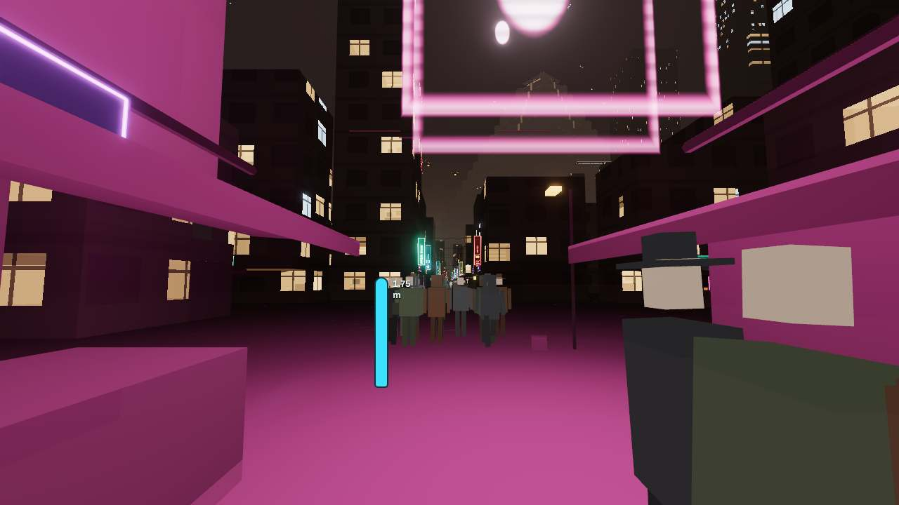
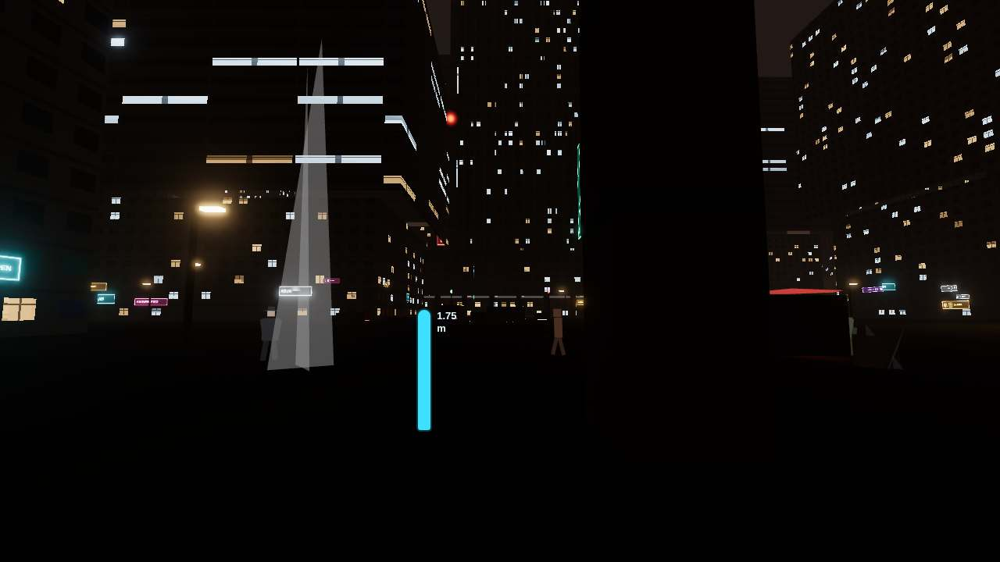
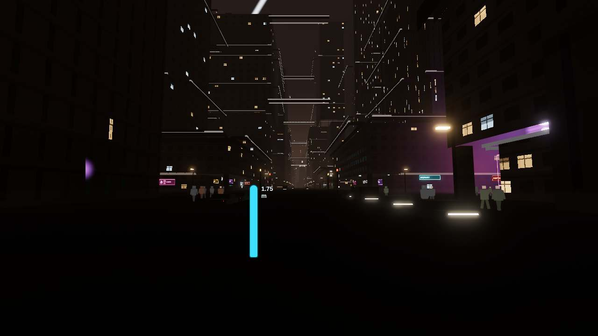

How this was measured
- Engine units are metres. Origin 34.0522 N, 118.2437 W. +X east, +Z south, +Y up.
- Fabric is the same generateFabric the chunk worker runs. Each measured block is a window that contains only that block centre, so the boxes belong to one district.
- On slopes the generator sinks a grounded box by 8 m and adds 8 m to its height. Reported mass height subtracts that sink.
- Façade storey is CELL_H for the style that dominates detail-0 masses at least 4 m tall.
- A driving line is metres from the street centreline to the car. It is not a painted lane. Painted lanes exist on freeways as spacing 3.45–3.6 m.
- Implied sidewalk = street/2 − driving line − 1.8 m, assuming one 3.6 m lane centred on the driving line. On streets 30 m and wider that remainder is mostly unused carriageway.
- Kit props are centered meshes. A box placed at ground height is half buried.
- Landmark tops for megatowers and pyramids are buildTower / buildPyramid parts.top. Other landmarks are the constants those builders add, checked against the source.
- Vehicle and pedestrian sizes are parsed from the geometry calls. Those files import three.js and are not loaded here.
- Quality tiers do not multiply world metres. The low tier draws no ground cars and shortens view distance.
Graphics tiers
Quality changes density and draw distance. It does not rescale metres. Low draws no ground cars (groundTraffic 0) and shortens farRadius to 4500 m; the map stays about 50 × 53 km. detailScale is 0.30 / 0.55 / 0.82 / 1 from low to ultra and only drops street-kit props. Phones never auto-pick high (medium or low). There is no world-scale factor.
| Tier | detailScale | farRadius | groundTraffic | crowd | crowd radius | landmarkLod |
|---|---|---|---|---|---|---|
| low | 0.3 | 4500 m | 0 | 56 | 48 m | 0.6 |
| medium | 0.55 | 7000 m | 22 | 160 | 64 m | 0.8 |
| high | 0.82 | 10000 m | 40 | 340 | 78 m | 1 |
| ultra | 1 | 14000 m | 64 | 680 | 88 m | 1.35 |
Low hides ground cars and pulls the far city in. It does not shrink a door, a car, or the 1.75 m reference figure.
Ranked fixes
Grouped so a later pass can take one subject. High severity first. The same mesh is listed once, with every district that shows it.
- high fail — Compact car, visual roof. Measured 1.03 m roof, 4.2 m long, 1.82 m wide. Expected real sedan roof 1.40–1.55 m, length 4.5–5.6 m.
src/vehicles/vehicleModels.ts car boxes. Districts: financial-megatowers, dtla, civic-center, historic-core, lakewood-megablocks, south-la-megablocks, westside, basin-sprawl, hollywood, lax-spaceport, long-beach, east-la. Traffic length MESH_LEN.car is 4.35 m. The bible compact car is 4.2 × 1.82 × 0.9 m. The mesh matches that length and width; the roof is 1.03 m against the bible 0.9 m and a real roof near 1.45 m. - high fail — Hauler, visual. Measured 2.85 m roof, 10.75 m long. Expected real articulated truck height 3.5–4.2 m, length 14–18 m.
src/vehicles/vehicleModels.ts hauler boxes. Districts: harbor. MESH_LEN.hauler is 11.7 m, which matches the bible and is short of a real tractor-trailer. - high fail — Parked rickshaw prop. Measured 0.725 m above the ground. Expected rickshaw body about 1.2–1.6 m.
src/districts/historic-core/dress.ts sy 1.45 at y ground. Districts: historic-core. Kit boxes are centered. y is the ground, so half of the 1.45 m box is under the street. - medium watch — Tanker, visual. Measured 2.78 m roof, 8.53 m long. Expected real tanker overall height about 3.2–4.0 m.
src/vehicles/vehicleModels.ts tanker. Districts: southeast-industrial, south-bay-refineries. MESH_LEN.tanker is 10.8 m. The shell is a 1.05 m radius cylinder. - medium watch — Canyon rickshaw scale. Measured 1.26 m roof, 3.04 m long, 0.91 m wide (28% of cars). Expected rickshaw about 1.4–1.8 m tall and 2.5–3.2 m long.
src/vehicles/groundTraffic.ts style() sx 0.5 sy 1.22 sz 0.7. Districts: historic-core. Applied when the edge kind is canyon or the driving line is under 5 m. - low watch — Compact car vs bible height. Measured 1.03 m. Expected bible 0.9 m.
docs/BIBLE.md ground vehicles; vehicleModels.ts. Districts: financial-megatowers, dtla, civic-center, historic-core, lakewood-megablocks, south-la-megablocks, westside, basin-sprawl, hollywood, lax-spaceport, long-beach, east-la. The authored height is the short one. Real-world scale is the row above. - low watch — Van, visual. Measured 1.73 m roof, 5.05 m long, 2.02 m wide. Expected real van roof 1.8–2.6 m, length 5.0–6.2 m.
src/vehicles/vehicleModels.ts van boxes. Districts: civic-center, lakewood-megablocks, south-la-megablocks, westside, basin-sprawl, lax-spaceport, east-la. MESH_LEN.van is 5.55 m (bible). Visual length is the merged boxes. - low watch — Box truck, visual. Measured 2.58 m roof, 7.38 m long. Expected real box truck roof 2.8–3.8 m, length 6–10 m.
src/vehicles/vehicleModels.ts box boxes. Districts: arts-district, southeast-industrial. MESH_LEN.box is 7.9 m (bible traffic length). - high fail — Bradbury service door. Measured 2.8 m high, 2.1 m wide. Expected 2.0–2.4 m.
src/districts/historic-core/interior.ts service door y −0.2 to 2.6, hw 1.05. Districts: historic-core. - high fail — Bradbury street door. Measured 7.2 m high, 4.8 m wide. Expected human door 2.0–2.4 m.
src/districts/historic-core/bradbury.ts DOOR_H / DOOR. Districts: historic-core. Heritage portal on the street face. - high fail — LAPD lobby opening. Measured 16.4 m wide, headroom to 12.4 m. Expected human door 2.0–2.4 m.
src/districts/civic-center/spec.ts HQ.doorHalf. Districts: civic-center. Lobby floor is 5.2 m. The opening is a mouth, not a leaf. - medium watch — Concourse door. Measured 2.6 m high, 2.1 m wide. Expected 2.0–2.4 m.
src/districts/long-beach/interior.ts door y 0 to 2.6, hw 1.05. Districts: long-beach. - medium watch — Court door. Measured 2.3 m × 2.7 m. Expected 2.0–2.4 m.
src/districts/wallace-vernon/spec.ts COURT.doorH. Districts: wallace-vernon. Human door in front of the portal, on the 3 m deck. - medium watch — Noodle-bar soffit. Measured 2.62 m. Expected door / shop opening 2.0–2.4 m.
src/districts/little-tokyo-market/dress.ts SOFFIT. Districts: little-tokyo-market. Shop opening under the stall, not a leaf door. - medium watch — Pyramid portal. Measured 288 m wide, 195.8 m tall. Expected monumental entrance, not a 2.0–2.4 m door.
src/districts/_shared/megatower/pyramid.ts portalW / portalH. Districts: wallace-vernon. The court door in front of it is the human opening. This glow is the north portal. - medium watch — Street lobby mouth. Measured 5.4 m wide. Expected a door leaf is about 0.9–2.1 m; a lobby mouth can be wider.
src/districts/hollywood/plan.ts DOOR_HALF_T 2.7. Districts: hollywood. The interior door is 2.1 m wide. The street gap is DOOR_HALF_T × 2. - low watch — Lift door. Measured 2.05 × 2.32 m. Expected lift opening about 2.0–2.3 m.
src/districts/k-megablock/spec.ts LIFT. Districts: k-megablock. - high fail — Apron stair rise. Measured 0.395 m median, 0.398 m max (210 treads). Expected real 0.15–0.18 m.
src/districts/coastal-strip/apronPlan.ts rise/round(rise/0.39). Districts: coastal-strip. The comment says treads rise ≤ 0.40 m. The formula can step past that. Bible row follows. - high fail — Catwalk stair rise. Measured 0.337 m. Expected 0.15–0.18 m.
src/districts/little-tokyo-market/dress.ts deckY / steps. Districts: little-tokyo-market. 12 risers to a 4.05 m deck. Tread run is 0.42 m (real tread about 0.25–0.32 m). - high fail — Catwalk tread. Measured 0.42 m. Expected 0.25–0.32 m.
src/districts/little-tokyo-market/dress.ts run. Districts: little-tokyo-market. - high fail — City Hall stair tread. Measured 0.645 m. Expected 0.25–0.32 m.
src/districts/civic-center/spec.ts HALL_STAIR. Districts: civic-center. - high fail — Court stair rise. Measured 0.375 m. Expected real 0.15–0.18 m.
src/districts/wallace-vernon/spec.ts COURT.stairRise. Districts: wallace-vernon. 8 risers, tread 2.4 m. Bible allows this under the 0.45 m step-up. - high fail — Court tread. Measured 2.4 m. Expected 0.25–0.32 m.
src/districts/wallace-vernon/spec.ts COURT.stairTread. Districts: wallace-vernon. A ceremonial run, much deeper than a step. - high fail — Footbridge stair rise. Measured 0.35 m. Expected real 0.15–0.18 m.
src/districts/historic-core/bridge.ts DECK/STEPS. Districts: historic-core. Bible records 32 × 0.35 m. That lore row is the next one. - high fail — LAPD stair tread. Measured 0.583 m. Expected 0.25–0.32 m.
src/districts/civic-center/spec.ts STAIR. Districts: civic-center. 32 treads from z -77.8 to -59.15. - medium watch — Footbridge tread. Measured 0.34 m. Expected 0.25–0.32 m.
src/districts/historic-core/bridge.ts TREAD. Districts: historic-core. - high fail — Catwalk rail. Measured 0.55 m above the deck. Expected 0.90–1.10 m.
src/districts/little-tokyo-market/dress.ts rail at deckY+0.55. Districts: little-tokyo-market. Centered box, sy 0.08, so the rail occupies about 0.51–0.59 m. Walk mode steps up 0.45 m, so this rail can be stepped over. - high fail — Façade storey. Measured Coffer 6.6 m (7 masses). Expected 3–4 m storey.
src/world/windows/facade.ts CELL_H. Districts: south-la-megablocks. Coffer cell is what the façade shader repeats as a floor. - high fail — Façade storey (Coffer). Measured Coffer 6.6 m (5 masses). Expected 3–4 m storey.
src/world/windows/facade.ts CELL_H. Districts: civic-center. Coffer cell is what the façade shader repeats as a floor. - high fail — Façade storey (Coffer). Measured Coffer 6.6 m (6 masses). Expected 3–4 m storey.
src/world/windows/facade.ts CELL_H. Districts: lakewood-megablocks. Coffer cell is what the façade shader repeats as a floor. - medium watch — Façade storey. Measured Industrial 7 m (12 masses). Expected 3–4 m if it reads as a floor; 6–8 m is a bay.
src/world/windows/facade.ts CELL_H. Districts: arts-district. Industrial cell is a bay height, not a residential storey. - medium watch — Façade storey. Measured Industrial 7 m (14 masses). Expected 3–4 m if it reads as a floor; 6–8 m is a bay.
src/world/windows/facade.ts CELL_H. Districts: southeast-industrial. Industrial cell is a bay height, not a residential storey. - medium watch — Façade storey. Measured Industrial 7 m (15 masses). Expected 3–4 m if it reads as a floor; 6–8 m is a bay.
src/world/windows/facade.ts CELL_H. Districts: south-bay-refineries. Industrial cell is a bay height, not a residential storey. - medium watch — Façade storey. Measured Industrial 7 m (8 masses). Expected 3–4 m if it reads as a floor; 6–8 m is a bay.
src/world/windows/facade.ts CELL_H. Districts: harbor. Industrial cell is a bay height, not a residential storey. - medium watch — Façade storey (Deco). Measured Deco 5.6 m (7 masses). Expected 3–4 m floor; bible office/civic band stops at 5.5 m.
src/world/windows/facade.ts CELL_H. Districts: historic-core. Deco sits just past the office band. - medium watch — Façade storey (Deco). Measured Deco 5.6 m (11 masses). Expected 3–4 m floor; bible office/civic band stops at 5.5 m.
src/world/windows/facade.ts CELL_H. Districts: hollywood. Deco sits just past the office band. - medium watch — Façade storey (Industrial). Measured Industrial 7 m (6 masses). Expected 3–4 m if it reads as a floor; 6–8 m is a bay.
src/world/windows/facade.ts CELL_H. Districts: financial-megatowers. Industrial cell is a bay height, not a residential storey. - medium watch — Façade storey (Industrial). Measured Industrial 7 m (5 masses). Expected 3–4 m if it reads as a floor; 6–8 m is a bay.
src/world/windows/facade.ts CELL_H. Districts: lax-spaceport. Industrial cell is a bay height, not a residential storey. - medium watch — Façade storey (Masonry). Measured Masonry 4.8 m (15 masses). Expected 3–4 m floor (bible office/civic band is 4.0–5.5 m).
src/world/windows/facade.ts CELL_H. Districts: historic-core. Masonry is inside the bible office/civic module and above a 3–4 m floor. - medium watch — Façade storey (Ribbon). Measured Ribbon 4.4 m (7 masses). Expected 3–4 m floor (bible office/civic band is 4.0–5.5 m).
src/world/windows/facade.ts CELL_H. Districts: financial-megatowers. Ribbon is inside the bible office/civic module and above a 3–4 m floor. - medium watch — Floor module. Measured 5.0 m. Expected 3–4 m floor; bible office band 4.0–5.5 m.
src/districts/long-beach/spec.ts MODULE. Districts: long-beach. - medium watch — Office module. Measured 5.0 m. Expected 3–4 m floor; bible office band 4.0–5.5 m.
src/districts/lax-spaceport/spec.ts FLOOR. Districts: lax-spaceport. - medium watch — Strip floor module. Measured 4.4 m. Expected 3–4 m floor; bible office band 4.0–5.5 m.
src/districts/hollywood/spec.ts FLOOR. Districts: hollywood. - low watch — Roof vs 54 modules. Measured 183.6 m vs slab 185 m. Expected a whole number of 3.4 m floors.
src/districts/k-megablock/spec.ts FLOOR / SLAB_H. Districts: k-megablock. 54 × 3.4 = 183.6 m. The roof is 185 m, so the last band is not one module. - low watch — Sampled mass height. Measured 38.4 m median of 40 detail-0 boxes. Expected 90–305 m fabric band.
generateFabric visual height (slope sink of 8 m removed). Districts: financial-megatowers. Sample range 5.7 m to 113 m. Heroes are landmarks and are not in this fabric sample. - low watch — Sampled mass height. Measured 63.8 m median of 27 detail-0 boxes. Expected 90–250 m fabric band.
generateFabric visual height (slope sink of 8 m removed). Districts: dtla. Sample range 6.4 m to 169.3 m. Heroes are landmarks and are not in this fabric sample. - low watch — Sampled mass height. Measured 34.5 m median of 44 detail-0 boxes. Expected 40–110 m fabric band.
generateFabric visual height (slope sink of 8 m removed). Districts: historic-core. Sample range 5 m to 61.5 m. Heroes are landmarks and are not in this fabric sample. - low watch — Sampled mass height. Measured 43.7 m median of 10 detail-0 boxes. Expected 60–185 m fabric band.
generateFabric visual height (slope sink of 8 m removed). Districts: k-megablock. Sample range 6.4 m to 113.9 m. Heroes are landmarks and are not in this fabric sample. - low watch — Sampled mass height. Measured 7.6 m median of 46 detail-0 boxes. Expected 15–60 m fabric band.
generateFabric visual height (slope sink of 8 m removed). Districts: coastal-strip. Sample range 4.6 m to 53.9 m. Heroes are landmarks and are not in this fabric sample. - low watch — Sampled mass height. Measured 17.6 m median of 34 detail-0 boxes. Expected 22–119 m fabric band.
generateFabric visual height (slope sink of 8 m removed). Districts: hollywood. Sample range 4.4 m to 49.3 m. Heroes are landmarks and are not in this fabric sample. - low watch — Sampled mass height. Measured 50 m median of 24 detail-0 boxes. Expected 60–180 m fabric band.
generateFabric visual height (slope sink of 8 m removed). Districts: long-beach. Sample range 6.4 m to 161.5 m. Heroes are landmarks and are not in this fabric sample. - medium watch — Implied sidewalk. Measured 10 m. Expected 1.5–4.5 m.
derived: street/2 − lane − 1.8. Districts: financial-megatowers. street/2 − driving line − 1.8 m (half of a 3.6 m lane centred on the driving line). The driving line is not a painted lane width. One tracked lane in a film-wide street; the remainder is carriageway, not a sidewalk slab. - medium watch — Implied sidewalk. Measured 8 m. Expected 1.5–4.5 m.
derived: street/2 − lane − 1.8. Districts: dtla. street/2 − driving line − 1.8 m (half of a 3.6 m lane centred on the driving line). The driving line is not a painted lane width. One tracked lane in a film-wide street; the remainder is carriageway, not a sidewalk slab. - medium watch — Implied sidewalk. Measured 11 m. Expected 1.5–4.5 m.
derived: street/2 − lane − 1.8. Districts: civic-center. street/2 − driving line − 1.8 m (half of a 3.6 m lane centred on the driving line). The driving line is not a painted lane width. One tracked lane in a film-wide street; the remainder is carriageway, not a sidewalk slab. - medium watch — Implied sidewalk. Measured 16.7 m. Expected 1.5–4.5 m.
derived: street/2 − lane − 1.8. Districts: lax-spaceport. street/2 − driving line − 1.8 m (half of a 3.6 m lane centred on the driving line). The driving line is not a painted lane width. One tracked lane in a film-wide street; the remainder is carriageway, not a sidewalk slab. - medium watch — Implied sidewalk. Measured 5.7 m. Expected 1.5–4.5 m.
derived: street/2 − lane − 1.8. Districts: harbor. street/2 − driving line − 1.8 m (half of a 3.6 m lane centred on the driving line). The driving line is not a painted lane width. One tracked lane in a film-wide street; the remainder is carriageway, not a sidewalk slab. - medium watch — Implied sidewalk. Measured 6.4 m. Expected 1.5–4.5 m.
derived: street/2 − lane − 1.8. Districts: long-beach. street/2 − driving line − 1.8 m (half of a 3.6 m lane centred on the driving line). The driving line is not a painted lane width. One tracked lane in a film-wide street; the remainder is carriageway, not a sidewalk slab. - low watch — Freeway lane spacing. Measured I-110 3.5 m × 3; US-101 3.45 m × 3; I-10 3.55 m × 3; I-405 3.6 m × 2; I-5 3.6 m × 2; I-105 3.6 m × 2; I-710 3.6 m × 2. Expected 3.5–3.7 m.
src/vehicles/trafficBuiltins.ts spacing. Districts: little-tokyo-market, financial-megatowers, dtla, civic-center, historic-core, wallace-vernon, k-megablock, arts-district, coastal-strip, lakewood-megablocks, south-la-megablocks, westside, basin-sprawl, southeast-industrial, hollywood, lax-spaceport, south-bay-refineries, harbor, long-beach, east-la, hills-sparse. I-110 is 3.5, I-10 is 3.55, I-405 / I-5 / I-105 / I-710 are 3.6. US-101 is 3.45, a tenth under the band. - low watch — Implied sidewalk. Measured 4.6 m. Expected 1.5–4.5 m.
derived: street/2 − lane − 1.8. Districts: south-la-megablocks, southeast-industrial. street/2 − driving line − 1.8 m (half of a 3.6 m lane centred on the driving line). The driving line is not a painted lane width. - low watch — Implied sidewalk. Measured 1.1 m. Expected 1.5–4.5 m.
derived: street/2 − lane − 1.8. Districts: basin-sprawl, east-la. street/2 − driving line − 1.8 m (half of a 3.6 m lane centred on the driving line). The driving line is not a painted lane width. - low watch — Implied sidewalk. Measured 5 m. Expected 1.5–4.5 m.
derived: street/2 − lane − 1.8. Districts: lakewood-megablocks. street/2 − driving line − 1.8 m (half of a 3.6 m lane centred on the driving line). The driving line is not a painted lane width. - medium watch — Blade sign. Measured 11.07 m median (8 in sample). Expected 2–8 m blade.
fabric Sign.h kind 1. Districts: dtla. - medium watch — Blade sign. Measured 9.9 m median (92 in sample). Expected 2–8 m blade.
fabric Sign.h kind 1. Districts: hollywood. - medium watch — Blade sign. Measured 10.5 m median (7 in sample). Expected 2–8 m blade.
fabric Sign.h kind 1. Districts: long-beach. - low watch — Street signs. Measured none in the fabric sample. Expected panels about 0.6–4 m.
fabric Sign.h. Districts: wallace-vernon, southeast-industrial, harbor, hills-sparse. The sample window had no sign records. Landmark signs are listed with the landmark. - low watch — Blade sign. Measured 8.12 m median (5 in sample). Expected 2–8 m blade.
fabric Sign.h kind 1. Districts: financial-megatowers. - low watch — Blade sign. Measured 9 m median (92 in sample). Expected 2–8 m blade.
fabric Sign.h kind 1. Districts: historic-core. - medium watch — Crowd share. Measured not registered (0). Expected a street crowd where people should read.
src/districts/little-tokyo-market/crowd.ts registerCrowdSource. Districts: wallace-vernon, coastal-strip, lax-spaceport, hills-sparse. No source calls registerCrowdSource for this district, so the player sees none of the 1.80 m mesh here. - low watch — Pedestrian hat. Measured 1.92 m. Expected 1.60–1.90 m to the top of the head; a hat may add a little.
src/districts/little-tokyo-market/crowd.ts hat box. Districts: little-tokyo-market, financial-megatowers, dtla, civic-center, historic-core, wallace-vernon, k-megablock, arts-district, coastal-strip, lakewood-megablocks, south-la-megablocks, westside, basin-sprawl, southeast-industrial, hollywood, lax-spaceport, south-bay-refineries, harbor, long-beach, east-la, hills-sparse. The crown box is centred at 1.86 m with height 0.12 m. - low watch — Dancer hologram. Measured 68 m tall, 15 m wide. Expected a pedestrian is 1.6–1.9 m; this is a billboard.
src/districts/historic-core/bridge.ts DANCER_H. Districts: historic-core. Bible: the figure is not on the deck. It stands in the Broadway intersection. Not a person mesh. - medium watch — El Segundo stacks. Measured 147 m tallest of 14 (published 140 m). Expected bible stacks to 140 m.
src/world/landmarks/Landmarks.ts flare-field h = height × range(0.6, 1.1). Districts: coastal-strip, south-bay-refineries. The loop can draw 1.1 × the published height, then a flare sprite 4 m above that. - medium watch — Bradbury masonry front. Measured 22.4 m. Expected JSON height 27 m is the jacket, not this stone front.
src/districts/historic-core/bradbury.ts H. Districts: historic-core. JACKET_H is 27 m and matches the JSON height. The stone front the player reads from the street is 22.4 m. - low watch — Megatower 6 (blade) height field. Measured JSON 520 m, mesh top 552 m. Expected the height field is the roof; the mast is extra and listed in the bible.
src/data/city-layout.json height; tower.ts mast(). Districts: financial-megatowers, historic-core. Anyone reading only the height field will undershoot the silhouette by the mast. - low watch — Old Corporate Pyramid (north) height field. Measured JSON 1000 m, mesh top 1070 m. Expected published height versus the silhouette.
city-layout.json height; pyramid.ts. Districts: wallace-vernon, southeast-industrial. - low watch — Old Corporate Pyramid (south) height field. Measured JSON 860 m, mesh top 930 m. Expected published height versus the silhouette.
city-layout.json height; pyramid.ts. Districts: wallace-vernon, southeast-industrial. - low watch — Megatower 1 (Bunker Hill slab) height field. Measured JSON 1020 m, mesh top 1105 m. Expected the height field is the roof; the mast is extra and listed in the bible.
src/data/city-layout.json height; tower.ts mast(). Districts: financial-megatowers. Anyone reading only the height field will undershoot the silhouette by the mast. - low watch — Megatower 2 (flared stack) height field. Measured JSON 760 m, mesh top 805 m. Expected the height field is the roof; the mast is extra and listed in the bible.
src/data/city-layout.json height; tower.ts mast(). Districts: financial-megatowers. Anyone reading only the height field will undershoot the silhouette by the mast. - low watch — Megatower 3 (terraced) height field. Measured JSON 660 m, mesh top 710 m. Expected the height field is the roof; the mast is extra and listed in the bible.
src/data/city-layout.json height; tower.ts mast(). Districts: financial-megatowers. Anyone reading only the height field will undershoot the silhouette by the mast. - low watch — Megatower 4 (cruciform lantern) height field. Measured JSON 600 m, mesh top 640 m. Expected the height field is the roof; the mast is extra and listed in the bible.
src/data/city-layout.json height; tower.ts mast(). Districts: financial-megatowers. Anyone reading only the height field will undershoot the silhouette by the mast. - low watch — Megatower 5 (twin gate) height field. Measured JSON 880 m, mesh top 940 m. Expected the height field is the roof; the mast is extra and listed in the bible.
src/data/city-layout.json height; tower.ts mast(). Districts: financial-megatowers. Anyone reading only the height field will undershoot the silhouette by the mast. - low watch — Megatower 7 (cage crown) height field. Measured JSON 560 m, mesh top 600 m. Expected the height field is the roof; the mast is extra and listed in the bible.
src/data/city-layout.json height; tower.ts mast(). Districts: financial-megatowers. Anyone reading only the height field will undershoot the silhouette by the mast. - low watch — Wallace Corporation Earth Headquarters height field. Measured JSON 3500 m, mesh top 3610 m. Expected published height versus the silhouette.
city-layout.json height; pyramid.ts. Districts: wallace-vernon. - medium watch — Canyon bollard. Measured 0.425 m above the ground. Expected bollard 0.6–1.0 m.
src/districts/historic-core/dress.ts cyl sy 0.85 at y ground. Districts: historic-core. Same centered-mesh placement. Visible height is sy/2. - low watch — Shared street lamp. Measured suppressed (NO_LAMPS). Expected a 6–12 m pole where the district has no replacement.
src/districts/_shared/streetLamps.ts NO_LAMPS / POLE_H 7.5. Districts: little-tokyo-market, civic-center, historic-core, wallace-vernon, coastal-strip, south-la-megablocks, hollywood, lax-spaceport, south-bay-refineries, harbor. The shared pole is 7.5 m (head near the top). This district is in NO_LAMPS, so that pole is not drawn.
Vehicles
Raise the shared car (and the truck classes) so a 1.75 m person reads next to them. The bible’s 0.9 m compact height is the number to change with the mesh.
Doors
Human openings should land between 2.0 and 2.4 m. Monumental portals can stay huge if a human door sits in front of them.
Stairs
Real risers are 0.15–0.18 m and treads about 0.28 m. Flights the bible already calls out (0.35 m, 0.375 m, apron ~0.39 m) need a lore decision before the mesh changes.
Rails
Handrails want about 0.9–1.1 m. Anything under the 0.45 m step-up can be walked over.
Storeys
Façade CELL_H is the floor the player counts. Keep 3–4 m for housing and shops. Office bands the bible already allows at 4.0–5.5 m should be labeled as that, not left looking like a mistake. Slit and monolith panels are not floors.
Lanes and sidewalks
Keep freeway spacing at 3.5–3.7 m. Say out loud that a driving line is a centreline offset. Wide avenues with one tracked lane should not be read as 8 m sidewalks.
Signs
Street panels stay in a human range. Billboards are boards.
People
The shared body is already 1.80 m. Districts with no crowd registration read as empty.
Landmarks
Published height and the mesh tip should be the same number, or the bible should say the mast is extra in the same sentence as the height.
Lamps
Poles that are centered on the ground sink. A 7.5 m shared lamp is a fair arterial pole where it is allowed to draw.
2. Little Tokyo Night Market

| Item | Measured | Expected | Verdict | Severity | Source |
|---|---|---|---|---|---|
| Façade storey | Market 3.2 m (115 masses) | 3–4 m storey Market cell sits in the real storey band. | pass | — | src/world/windows/facade.ts CELL_H |
| Sampled mass height | 13.1 m median of 117 detail-0 boxes | 7–95 m fabric band Sample range 5.9 m to 83.5 m. Heroes are landmarks and are not in this fabric sample. | pass | — | generateFabric visual height (slope sink of 8 m removed) |
| Flat sign panel | 0.72 m median (90 in sample) | 0.6–4 m street panel | pass | — | fabric Sign.h kind 0 |
| Blade sign | 3.37 m median (65 in sample) | 2–8 m blade | pass | — | fabric Sign.h kind 1 |
| Billboard panel | 7.74 m median (2 in sample) | a billboard, not a door or a person Kind 2 is a figure panel. Height is the board, not a storey. | pass | — | fabric Sign.h kind 2 |
| Street width | 7 m | bible 7 m | pass | — | src/data/city-layout.json grid.street |
| Driving line | no lattice | a centreline offset where cars are spawned No cars are placed on a driving line here. | pass | — | src/vehicles/trafficRegistry.ts |
| Freeway lane spacing | I-110 3.5 m × 3; US-101 3.45 m × 3; I-10 3.55 m × 3; I-405 3.6 m × 2; I-5 3.6 m × 2; I-105 3.6 m × 2; I-710 3.6 m × 2 | 3.5–3.7 m I-110 is 3.5, I-10 is 3.55, I-405 / I-5 / I-105 / I-710 are 3.6. US-101 is 3.45, a tenth under the band. | watch | low | src/vehicles/trafficBuiltins.ts spacing |
| Signal pole | 5.45 m pole, head centred at 5.52 m | bible about 5.5 m; real signal about 4.5–6.5 m | pass | — | src/vehicles/groundTraffic.ts BoxGeometry 0.16 × 5.45 |
| Quality rescale | none | metres stay put at every tier detailScale, farRadius, crowd count and groundTraffic change. The city is not shrunk for a phone. | pass | — | src/core/quality.ts settingsFor |
| Ground vehicles | no street graph | cars only where a lattice exists The market has no lattice. The bible sends it pedestrians, umbrellas and bikes. | pass | — | src/vehicles/trafficRegistry.ts NO_STREET_GRAPH |
| Traffic spinner | 5 m long, 2.66 m wide, 1.51 m high | length 4.5–5.6 m; cabin about 1.2–1.8 m Authored SPINNER_DIMS are 5.0 × 2.3 × 1.45 m. Pods reach about 2.66 m. The player craft is the glTF spinner; traffic uses this procedural mesh. Width vs the 2.3 m field is 2.66 m. | pass | — | src/vehicles/spinnerModel.ts spinnerGeometries / SPINNER_DIMS |
| Pedestrian head | 1.8 m | 1.60–1.90 m One shared mesh. WalkController HUMAN is eye 1.7 m, height 1.8 m, walk 1.5 m/s, run 4.2 m/s. | pass | — | src/districts/little-tokyo-market/crowd.ts personGeometry |
| Pedestrian hat | 1.92 m | 1.60–1.90 m to the top of the head; a hat may add a little The crown box is centred at 1.86 m with height 0.12 m. | watch | low | src/districts/little-tokyo-market/crowd.ts hat box |
| Crowd share | 1 | registered crowd using the 1.80 m mesh Share scales how many of the tier budget this district keeps. It does not scale the mesh. | pass | — | registerCrowdSource share 1 |
| Shared street lamp | suppressed (NO_LAMPS) | a 6–12 m pole where the district has no replacement The shared pole is 7.5 m (head near the top). This district is in NO_LAMPS, so that pole is not drawn. | watch | low | src/districts/_shared/streetLamps.ts NO_LAMPS / POLE_H 7.5 |
| Noodle-bar soffit | 2.62 m | door / shop opening 2.0–2.4 m Shop opening under the stall, not a leaf door. | watch | medium | src/districts/little-tokyo-market/dress.ts SOFFIT |
| Catwalk stair rise | 0.337 m | 0.15–0.18 m 12 risers to a 4.05 m deck. Tread run is 0.42 m (real tread about 0.25–0.32 m). | fail | high | src/districts/little-tokyo-market/dress.ts deckY / steps |
| Catwalk tread | 0.42 m | 0.25–0.32 m | fail | high | src/districts/little-tokyo-market/dress.ts run |
| Catwalk rail | 0.55 m above the deck | 0.90–1.10 m Centered box, sy 0.08, so the rail occupies about 0.51–0.59 m. Walk mode steps up 0.45 m, so this rail can be stepped over. | fail | high | src/districts/little-tokyo-market/dress.ts rail at deckY+0.55 |
| Market lamp | 4.1 m | pedestrian lamp 3.5–6 m Cylinder is centered, and the placement adds half the height, so it stands from the ground to 4.1 m. | pass | — | src/districts/little-tokyo-market/dress.ts cyl sy 4.1 at ground+2.05 |
3. Financial District Megatowers

| Item | Measured | Expected | Verdict | Severity | Source |
|---|---|---|---|---|---|
| Façade storey | Megablock 3.6 m (17 masses) | 3–4 m storey Megablock cell sits in the real storey band. | pass | — | src/world/windows/facade.ts CELL_H |
| Façade storey (Ribbon) | Ribbon 4.4 m (7 masses) | 3–4 m floor (bible office/civic band is 4.0–5.5 m) Ribbon is inside the bible office/civic module and above a 3–4 m floor. | watch | medium | src/world/windows/facade.ts CELL_H |
| Façade storey (Industrial) | Industrial 7 m (6 masses) | 3–4 m if it reads as a floor; 6–8 m is a bay Industrial cell is a bay height, not a residential storey. | watch | medium | src/world/windows/facade.ts CELL_H |
| Sampled mass height | 38.4 m median of 40 detail-0 boxes | 90–305 m fabric band Sample range 5.7 m to 113 m. Heroes are landmarks and are not in this fabric sample. | watch | low | generateFabric visual height (slope sink of 8 m removed) |
| Flat sign panel | 1.67 m median (150 in sample) | 0.6–4 m street panel | pass | — | fabric Sign.h kind 0 |
| Blade sign | 8.12 m median (5 in sample) | 2–8 m blade | watch | low | fabric Sign.h kind 1 |
| Billboard panel | 12.51 m median (3 in sample) | a billboard, not a door or a person Kind 2 is a figure panel. Height is the board, not a storey. | pass | — | fabric Sign.h kind 2 |
| Street width | 38 m | bible 38 m | pass | — | src/data/city-layout.json grid.street |
| Driving-line offset | 7.2 m from the centreline | bible ±7.2 m; not a 3.5–3.7 m painted lane The constant is metres from the street centreline to the car. Freeway spacing is the painted-lane module. | pass | — | streetLattices().lane |
| Implied sidewalk | 10 m | 1.5–4.5 m street/2 − driving line − 1.8 m (half of a 3.6 m lane centred on the driving line). The driving line is not a painted lane width. One tracked lane in a film-wide street; the remainder is carriageway, not a sidewalk slab. | watch | medium | derived: street/2 − lane − 1.8 |
| Freeway lane spacing | I-110 3.5 m × 3; US-101 3.45 m × 3; I-10 3.55 m × 3; I-405 3.6 m × 2; I-5 3.6 m × 2; I-105 3.6 m × 2; I-710 3.6 m × 2 | 3.5–3.7 m I-110 is 3.5, I-10 is 3.55, I-405 / I-5 / I-105 / I-710 are 3.6. US-101 is 3.45, a tenth under the band. | watch | low | src/vehicles/trafficBuiltins.ts spacing |
| Signal pole | 5.45 m pole, head centred at 5.52 m | bible about 5.5 m; real signal about 4.5–6.5 m | pass | — | src/vehicles/groundTraffic.ts BoxGeometry 0.16 × 5.45 |
| Quality rescale | none | metres stay put at every tier detailScale, farRadius, crowd count and groundTraffic change. The city is not shrunk for a phone. | pass | — | src/core/quality.ts settingsFor |
| Compact car, visual roof | 1.03 m roof, 4.2 m long, 1.82 m wide | real sedan roof 1.40–1.55 m, length 4.5–5.6 m Traffic length MESH_LEN.car is 4.35 m. The bible compact car is 4.2 × 1.82 × 0.9 m. The mesh matches that length and width; the roof is 1.03 m against the bible 0.9 m and a real roof near 1.45 m. | fail | high | src/vehicles/vehicleModels.ts car boxes |
| Compact car vs bible height | 1.03 m | bible 0.9 m The authored height is the short one. Real-world scale is the row above. | watch | low | docs/BIBLE.md ground vehicles; vehicleModels.ts |
| Traffic spinner | 5 m long, 2.66 m wide, 1.51 m high | length 4.5–5.6 m; cabin about 1.2–1.8 m Authored SPINNER_DIMS are 5.0 × 2.3 × 1.45 m. Pods reach about 2.66 m. The player craft is the glTF spinner; traffic uses this procedural mesh. Width vs the 2.3 m field is 2.66 m. | pass | — | src/vehicles/spinnerModel.ts spinnerGeometries / SPINNER_DIMS |
| Pedestrian head | 1.8 m | 1.60–1.90 m One shared mesh. WalkController HUMAN is eye 1.7 m, height 1.8 m, walk 1.5 m/s, run 4.2 m/s. | pass | — | src/districts/little-tokyo-market/crowd.ts personGeometry |
| Pedestrian hat | 1.92 m | 1.60–1.90 m to the top of the head; a hat may add a little The crown box is centred at 1.86 m with height 0.12 m. | watch | low | src/districts/little-tokyo-market/crowd.ts hat box |
| Crowd share | 0.4 | registered crowd using the 1.80 m mesh Share scales how many of the tier budget this district keeps. It does not scale the mesh. | pass | — | registerCrowdSource share 0.4 |
| Shared street lamp | 7.5 m pole | arterial pole 6–12 m Spacing 32 m. Curb inset is min(2.2, street × 0.18). The mesh is translated so the pole stands on the ground. | pass | — | src/districts/_shared/streetLamps.ts POLE_H |
| Megatower 1 (Bunker Hill slab) visual top | 1105 m | bible roof 1020 m + mast 85 m = 1105 m JSON height is 1020 m. The mast is added on top of that roof. Sited in financial-megatowers. | pass | — | src/districts/_shared/megatower/tower.ts buildTower parts.top |
| Megatower 1 (Bunker Hill slab) height field | JSON 1020 m, mesh top 1105 m | the height field is the roof; the mast is extra and listed in the bible Anyone reading only the height field will undershoot the silhouette by the mast. | watch | low | src/data/city-layout.json height; tower.ts mast() |
| Megatower 2 (flared stack) visual top | 805 m | bible roof 760 m + mast 45 m = 805 m JSON height is 760 m. The mast is added on top of that roof. Sited in financial-megatowers. | pass | — | src/districts/_shared/megatower/tower.ts buildTower parts.top |
| Megatower 2 (flared stack) height field | JSON 760 m, mesh top 805 m | the height field is the roof; the mast is extra and listed in the bible Anyone reading only the height field will undershoot the silhouette by the mast. | watch | low | src/data/city-layout.json height; tower.ts mast() |
| Megatower 3 (terraced) visual top | 710 m | bible roof 660 m + mast 50 m = 710 m JSON height is 660 m. The mast is added on top of that roof. Sited in financial-megatowers. | pass | — | src/districts/_shared/megatower/tower.ts buildTower parts.top |
| Megatower 3 (terraced) height field | JSON 660 m, mesh top 710 m | the height field is the roof; the mast is extra and listed in the bible Anyone reading only the height field will undershoot the silhouette by the mast. | watch | low | src/data/city-layout.json height; tower.ts mast() |
| Megatower 4 (cruciform lantern) visual top | 640 m | bible roof 600 m + mast 40 m = 640 m JSON height is 600 m. The mast is added on top of that roof. Sited in financial-megatowers. | pass | — | src/districts/_shared/megatower/tower.ts buildTower parts.top |
| Megatower 4 (cruciform lantern) height field | JSON 600 m, mesh top 640 m | the height field is the roof; the mast is extra and listed in the bible Anyone reading only the height field will undershoot the silhouette by the mast. | watch | low | src/data/city-layout.json height; tower.ts mast() |
| Megatower 5 (twin gate) visual top | 940 m | bible roof 880 m + mast 60 m = 940 m JSON height is 880 m. The mast is added on top of that roof. Sited in financial-megatowers. | pass | — | src/districts/_shared/megatower/tower.ts buildTower parts.top |
| Megatower 5 (twin gate) height field | JSON 880 m, mesh top 940 m | the height field is the roof; the mast is extra and listed in the bible Anyone reading only the height field will undershoot the silhouette by the mast. | watch | low | src/data/city-layout.json height; tower.ts mast() |
| Megatower 6 (blade) visual top | 552 m | bible roof 520 m + mast 32 m = 552 m JSON height is 520 m. The mast is added on top of that roof. Sited in historic-core. | pass | — | src/districts/_shared/megatower/tower.ts buildTower parts.top |
| Megatower 6 (blade) height field | JSON 520 m, mesh top 552 m | the height field is the roof; the mast is extra and listed in the bible Anyone reading only the height field will undershoot the silhouette by the mast. | watch | low | src/data/city-layout.json height; tower.ts mast() |
| Megatower 7 (cage crown) visual top | 600 m | bible roof 560 m + mast 40 m = 600 m JSON height is 560 m. The mast is added on top of that roof. Sited in financial-megatowers. | pass | — | src/districts/_shared/megatower/tower.ts buildTower parts.top |
| Megatower 7 (cage crown) height field | JSON 560 m, mesh top 600 m | the height field is the roof; the mast is extra and listed in the bible Anyone reading only the height field will undershoot the silhouette by the mast. | watch | low | src/data/city-layout.json height; tower.ts mast() |
| 2019-era Ziggurat Tower A visual top | 420 m | bible 420 m (mast 0; flames sit above) JSON height is 420 m. The mast is added on top of that roof. Sited in financial-megatowers. | pass | — | src/districts/_shared/megatower/tower.ts buildTower parts.top |
| 2019-era Ziggurat Tower B visual top | 360 m | bible 360 m (mast 0; flames sit above) JSON height is 360 m. The mast is added on top of that roof. Sited in financial-megatowers. | pass | — | src/districts/_shared/megatower/tower.ts buildTower parts.top |
| 2019-era Ziggurat Tower C visual top | 310 m | bible 310 m (mast 0; flames sit above) JSON height is 310 m. The mast is added on top of that roof. Sited in financial-megatowers. | pass | — | src/districts/_shared/megatower/tower.ts buildTower parts.top |
| Skybridge MT-1 / Ziggurat A deck | 342 m underside | JSON height is the deck, not a roof Enclosure height is the landmark baseDepth (fallback 12 m) plus a 1.6 m roof on the tube. | pass | — | src/districts/financial-megatowers/landmarks.ts y: l.height |
| Skybridge MT-2 / MT-4 deck | 436 m underside | JSON height is the deck, not a roof Enclosure height is the landmark baseDepth (fallback 12 m) plus a 1.6 m roof on the tube. | pass | — | src/districts/financial-megatowers/landmarks.ts y: l.height |
| Skybridge MT-5 / Ziggurat B deck | 336 m underside | JSON height is the deck, not a roof Enclosure height is the landmark baseDepth (fallback 12 m) plus a 1.6 m roof on the tube. | pass | — | src/districts/financial-megatowers/landmarks.ts y: l.height |
| Skybridge MT-1 / MT-3 deck | 560 m underside | JSON height is the deck, not a roof Enclosure height is the landmark baseDepth (fallback 12 m) plus a 1.6 m roof on the tube. | pass | — | src/districts/financial-megatowers/landmarks.ts y: l.height |
4. Downtown Megablocks

| Item | Measured | Expected | Verdict | Severity | Source |
|---|---|---|---|---|---|
| Façade storey | Panel 3.9 m (10 masses) | 3–4 m storey Panel cell sits in the real storey band. | pass | — | src/world/windows/facade.ts CELL_H |
| Sampled mass height | 63.8 m median of 27 detail-0 boxes | 90–250 m fabric band Sample range 6.4 m to 169.3 m. Heroes are landmarks and are not in this fabric sample. | watch | low | generateFabric visual height (slope sink of 8 m removed) |
| Flat sign panel | 1.76 m median (94 in sample) | 0.6–4 m street panel | pass | — | fabric Sign.h kind 0 |
| Blade sign | 11.07 m median (8 in sample) | 2–8 m blade | watch | medium | fabric Sign.h kind 1 |
| Billboard panel | 13.5 m median (2 in sample) | a billboard, not a door or a person Kind 2 is a figure panel. Height is the board, not a storey. | pass | — | fabric Sign.h kind 2 |
| Street width | 34 m | bible 34 m | pass | — | src/data/city-layout.json grid.street |
| Driving-line offset | 7.2 m from the centreline | bible ±7.2 m; not a 3.5–3.7 m painted lane The constant is metres from the street centreline to the car. Freeway spacing is the painted-lane module. | pass | — | streetLattices().lane |
| Implied sidewalk | 8 m | 1.5–4.5 m street/2 − driving line − 1.8 m (half of a 3.6 m lane centred on the driving line). The driving line is not a painted lane width. One tracked lane in a film-wide street; the remainder is carriageway, not a sidewalk slab. | watch | medium | derived: street/2 − lane − 1.8 |
| Freeway lane spacing | I-110 3.5 m × 3; US-101 3.45 m × 3; I-10 3.55 m × 3; I-405 3.6 m × 2; I-5 3.6 m × 2; I-105 3.6 m × 2; I-710 3.6 m × 2 | 3.5–3.7 m I-110 is 3.5, I-10 is 3.55, I-405 / I-5 / I-105 / I-710 are 3.6. US-101 is 3.45, a tenth under the band. | watch | low | src/vehicles/trafficBuiltins.ts spacing |
| Signal pole | 5.45 m pole, head centred at 5.52 m | bible about 5.5 m; real signal about 4.5–6.5 m | pass | — | src/vehicles/groundTraffic.ts BoxGeometry 0.16 × 5.45 |
| Quality rescale | none | metres stay put at every tier detailScale, farRadius, crowd count and groundTraffic change. The city is not shrunk for a phone. | pass | — | src/core/quality.ts settingsFor |
| Compact car, visual roof | 1.03 m roof, 4.2 m long, 1.82 m wide | real sedan roof 1.40–1.55 m, length 4.5–5.6 m Traffic length MESH_LEN.car is 4.35 m. The bible compact car is 4.2 × 1.82 × 0.9 m. The mesh matches that length and width; the roof is 1.03 m against the bible 0.9 m and a real roof near 1.45 m. | fail | high | src/vehicles/vehicleModels.ts car boxes |
| Compact car vs bible height | 1.03 m | bible 0.9 m The authored height is the short one. Real-world scale is the row above. | watch | low | docs/BIBLE.md ground vehicles; vehicleModels.ts |
| Traffic spinner | 5 m long, 2.66 m wide, 1.51 m high | length 4.5–5.6 m; cabin about 1.2–1.8 m Authored SPINNER_DIMS are 5.0 × 2.3 × 1.45 m. Pods reach about 2.66 m. The player craft is the glTF spinner; traffic uses this procedural mesh. Width vs the 2.3 m field is 2.66 m. | pass | — | src/vehicles/spinnerModel.ts spinnerGeometries / SPINNER_DIMS |
| Pedestrian head | 1.8 m | 1.60–1.90 m One shared mesh. WalkController HUMAN is eye 1.7 m, height 1.8 m, walk 1.5 m/s, run 4.2 m/s. | pass | — | src/districts/little-tokyo-market/crowd.ts personGeometry |
| Pedestrian hat | 1.92 m | 1.60–1.90 m to the top of the head; a hat may add a little The crown box is centred at 1.86 m with height 0.12 m. | watch | low | src/districts/little-tokyo-market/crowd.ts hat box |
| Crowd share | 0.4 | registered crowd using the 1.80 m mesh Share scales how many of the tier budget this district keeps. It does not scale the mesh. | pass | — | registerCrowdSource share 0.4 |
| Shared street lamp | 7.5 m pole | arterial pole 6–12 m Spacing 32 m. Curb inset is min(2.2, street × 0.18). The mesh is translated so the pole stands on the ground. | pass | — | src/districts/_shared/streetLamps.ts POLE_H |
5. Civic Center (LAPD HQ)
| Item | Measured | Expected | Verdict | Severity | Source |
|---|---|---|---|---|---|
| Façade storey | Megablock 3.6 m (11 masses) | 3–4 m storey Megablock cell sits in the real storey band. | pass | — | src/world/windows/facade.ts CELL_H |
| Façade storey (Coffer) | Coffer 6.6 m (5 masses) | 3–4 m storey Coffer cell is what the façade shader repeats as a floor. | fail | high | src/world/windows/facade.ts CELL_H |
| Sampled mass height | 47.6 m median of 27 detail-0 boxes | 36–122 m fabric band Sample range 6.4 m to 106.5 m. Heroes are landmarks and are not in this fabric sample. | pass | — | generateFabric visual height (slope sink of 8 m removed) |
| Flat sign panel | 1.3 m median (1 in sample) | 0.6–4 m street panel | pass | — | fabric Sign.h kind 0 |
| Street width | 40 m | bible 40 m | pass | — | src/data/city-layout.json grid.street |
| Driving-line offset | 7.2 m from the centreline | bible ±7.2 m; not a 3.5–3.7 m painted lane The constant is metres from the street centreline to the car. Freeway spacing is the painted-lane module. | pass | — | streetLattices().lane |
| Implied sidewalk | 11 m | 1.5–4.5 m street/2 − driving line − 1.8 m (half of a 3.6 m lane centred on the driving line). The driving line is not a painted lane width. One tracked lane in a film-wide street; the remainder is carriageway, not a sidewalk slab. | watch | medium | derived: street/2 − lane − 1.8 |
| Freeway lane spacing | I-110 3.5 m × 3; US-101 3.45 m × 3; I-10 3.55 m × 3; I-405 3.6 m × 2; I-5 3.6 m × 2; I-105 3.6 m × 2; I-710 3.6 m × 2 | 3.5–3.7 m I-110 is 3.5, I-10 is 3.55, I-405 / I-5 / I-105 / I-710 are 3.6. US-101 is 3.45, a tenth under the band. | watch | low | src/vehicles/trafficBuiltins.ts spacing |
| Signal pole | 5.45 m pole, head centred at 5.52 m | bible about 5.5 m; real signal about 4.5–6.5 m | pass | — | src/vehicles/groundTraffic.ts BoxGeometry 0.16 × 5.45 |
| Quality rescale | none | metres stay put at every tier detailScale, farRadius, crowd count and groundTraffic change. The city is not shrunk for a phone. | pass | — | src/core/quality.ts settingsFor |
| Compact car, visual roof | 1.03 m roof, 4.2 m long, 1.82 m wide | real sedan roof 1.40–1.55 m, length 4.5–5.6 m Traffic length MESH_LEN.car is 4.35 m. The bible compact car is 4.2 × 1.82 × 0.9 m. The mesh matches that length and width; the roof is 1.03 m against the bible 0.9 m and a real roof near 1.45 m. | fail | high | src/vehicles/vehicleModels.ts car boxes |
| Compact car vs bible height | 1.03 m | bible 0.9 m The authored height is the short one. Real-world scale is the row above. | watch | low | docs/BIBLE.md ground vehicles; vehicleModels.ts |
| Van, visual | 1.73 m roof, 5.05 m long, 2.02 m wide | real van roof 1.8–2.6 m, length 5.0–6.2 m MESH_LEN.van is 5.55 m (bible). Visual length is the merged boxes. | watch | low | src/vehicles/vehicleModels.ts van boxes |
| Traffic spinner | 5 m long, 2.66 m wide, 1.51 m high | length 4.5–5.6 m; cabin about 1.2–1.8 m Authored SPINNER_DIMS are 5.0 × 2.3 × 1.45 m. Pods reach about 2.66 m. The player craft is the glTF spinner; traffic uses this procedural mesh. Width vs the 2.3 m field is 2.66 m. | pass | — | src/vehicles/spinnerModel.ts spinnerGeometries / SPINNER_DIMS |
| Pedestrian head | 1.8 m | 1.60–1.90 m One shared mesh. WalkController HUMAN is eye 1.7 m, height 1.8 m, walk 1.5 m/s, run 4.2 m/s. | pass | — | src/districts/little-tokyo-market/crowd.ts personGeometry |
| Pedestrian hat | 1.92 m | 1.60–1.90 m to the top of the head; a hat may add a little The crown box is centred at 1.86 m with height 0.12 m. | watch | low | src/districts/little-tokyo-market/crowd.ts hat box |
| Crowd share | 0.22 | registered crowd using the 1.80 m mesh Share scales how many of the tier budget this district keeps. It does not scale the mesh. | pass | — | registerCrowdSource share 0.22 |
| Shared street lamp | suppressed (NO_LAMPS) | a 6–12 m pole where the district has no replacement The shared pole is 7.5 m (head near the top). This district is in NO_LAMPS, so that pole is not drawn. | watch | low | src/districts/_shared/streetLamps.ts NO_LAMPS / POLE_H 7.5 |
| LAPD stair rise | 0.157 m | 0.15–0.18 m | pass | — | src/districts/civic-center/spec.ts STAIR |
| LAPD stair tread | 0.583 m | 0.25–0.32 m 32 treads from z -77.8 to -59.15. | fail | high | src/districts/civic-center/spec.ts STAIR |
| City Hall stair rise | 0.156 m | 0.15–0.18 m | pass | — | src/districts/civic-center/spec.ts HALL_STAIR |
| City Hall stair tread | 0.645 m | 0.25–0.32 m | fail | high | src/districts/civic-center/spec.ts HALL_STAIR |
| LAPD lobby opening | 16.4 m wide, headroom to 12.4 m | human door 2.0–2.4 m Lobby floor is 5.2 m. The opening is a mouth, not a leaf. | fail | high | src/districts/civic-center/spec.ts HQ.doorHalf |
| LAPD height | 216 m | JSON / bible 216 m | pass | — | src/districts/civic-center/spec.ts HQ.height |
| City Hall height | 138 m | JSON / bible 138 m to the lamp | pass | — | src/districts/civic-center/spec.ts HALL.height |
| LAPD JSON height | 216 m | bible 216 m | pass | — | city-layout.json lapd-hq |
| City Hall JSON height | 138 m | bible 138 m | pass | — | city-layout.json city-hall |
6. Broadway Neon Canyon
| Item | Measured | Expected | Verdict | Severity | Source |
|---|---|---|---|---|---|
| Façade storey | Panel 3.9 m (22 masses) | 3–4 m storey Panel cell sits in the real storey band. | pass | — | src/world/windows/facade.ts CELL_H |
| Façade storey (Masonry) | Masonry 4.8 m (15 masses) | 3–4 m floor (bible office/civic band is 4.0–5.5 m) Masonry is inside the bible office/civic module and above a 3–4 m floor. | watch | medium | src/world/windows/facade.ts CELL_H |
| Façade storey (Deco) | Deco 5.6 m (7 masses) | 3–4 m floor; bible office/civic band stops at 5.5 m Deco sits just past the office band. | watch | medium | src/world/windows/facade.ts CELL_H |
| Sampled mass height | 34.5 m median of 44 detail-0 boxes | 40–110 m fabric band Sample range 5 m to 61.5 m. Heroes are landmarks and are not in this fabric sample. | watch | low | generateFabric visual height (slope sink of 8 m removed) |
| Flat sign panel | 1.15 m median (9 in sample) | 0.6–4 m street panel | pass | — | fabric Sign.h kind 0 |
| Blade sign | 9 m median (92 in sample) | 2–8 m blade | watch | low | fabric Sign.h kind 1 |
| Street width | 18 m | bible 18 m | pass | — | src/data/city-layout.json grid.street |
| Driving-line offset | 3.15 m from the centreline (canyon) | bible ±3.15 m; not a 3.5–3.7 m painted lane The constant is metres from the street centreline to the car. Freeway spacing is the painted-lane module. | pass | — | streetLattices().lane |
| Implied sidewalk | 4.05 m | 1.5–4.5 m street/2 − driving line − 1.8 m (half of a 3.6 m lane centred on the driving line). The driving line is not a painted lane width. | pass | — | derived: street/2 − lane − 1.8 |
| Freeway lane spacing | I-110 3.5 m × 3; US-101 3.45 m × 3; I-10 3.55 m × 3; I-405 3.6 m × 2; I-5 3.6 m × 2; I-105 3.6 m × 2; I-710 3.6 m × 2 | 3.5–3.7 m I-110 is 3.5, I-10 is 3.55, I-405 / I-5 / I-105 / I-710 are 3.6. US-101 is 3.45, a tenth under the band. | watch | low | src/vehicles/trafficBuiltins.ts spacing |
| Signal pole | 5.45 m pole, head centred at 5.52 m | bible about 5.5 m; real signal about 4.5–6.5 m | pass | — | src/vehicles/groundTraffic.ts BoxGeometry 0.16 × 5.45 |
| Quality rescale | none | metres stay put at every tier detailScale, farRadius, crowd count and groundTraffic change. The city is not shrunk for a phone. | pass | — | src/core/quality.ts settingsFor |
| Compact car, visual roof | 1.03 m roof, 4.2 m long, 1.82 m wide | real sedan roof 1.40–1.55 m, length 4.5–5.6 m Traffic length MESH_LEN.car is 4.35 m. The bible compact car is 4.2 × 1.82 × 0.9 m. The mesh matches that length and width; the roof is 1.03 m against the bible 0.9 m and a real roof near 1.45 m. | fail | high | src/vehicles/vehicleModels.ts car boxes |
| Compact car vs bible height | 1.03 m | bible 0.9 m The authored height is the short one. Real-world scale is the row above. | watch | low | docs/BIBLE.md ground vehicles; vehicleModels.ts |
| Canyon rickshaw scale | 1.26 m roof, 3.04 m long, 0.91 m wide (28% of cars) | rickshaw about 1.4–1.8 m tall and 2.5–3.2 m long Applied when the edge kind is canyon or the driving line is under 5 m. | watch | medium | src/vehicles/groundTraffic.ts style() sx 0.5 sy 1.22 sz 0.7 |
| Traffic spinner | 5 m long, 2.66 m wide, 1.51 m high | length 4.5–5.6 m; cabin about 1.2–1.8 m Authored SPINNER_DIMS are 5.0 × 2.3 × 1.45 m. Pods reach about 2.66 m. The player craft is the glTF spinner; traffic uses this procedural mesh. Width vs the 2.3 m field is 2.66 m. | pass | — | src/vehicles/spinnerModel.ts spinnerGeometries / SPINNER_DIMS |
| Pedestrian head | 1.8 m | 1.60–1.90 m One shared mesh. WalkController HUMAN is eye 1.7 m, height 1.8 m, walk 1.5 m/s, run 4.2 m/s. | pass | — | src/districts/little-tokyo-market/crowd.ts personGeometry |
| Pedestrian hat | 1.92 m | 1.60–1.90 m to the top of the head; a hat may add a little The crown box is centred at 1.86 m with height 0.12 m. | watch | low | src/districts/little-tokyo-market/crowd.ts hat box |
| Crowd share | 0.72 | registered crowd using the 1.80 m mesh Share scales how many of the tier budget this district keeps. It does not scale the mesh. | pass | — | registerCrowdSource share 0.72 |
| Shared street lamp | suppressed (NO_LAMPS) | a 6–12 m pole where the district has no replacement The shared pole is 7.5 m (head near the top). This district is in NO_LAMPS, so that pole is not drawn. | watch | low | src/districts/_shared/streetLamps.ts NO_LAMPS / POLE_H 7.5 |
| Bradbury street door | 7.2 m high, 4.8 m wide | human door 2.0–2.4 m Heritage portal on the street face. | fail | high | src/districts/historic-core/bradbury.ts DOOR_H / DOOR |
| Bradbury service door | 2.8 m high, 2.1 m wide | 2.0–2.4 m | fail | high | src/districts/historic-core/interior.ts service door y −0.2 to 2.6, hw 1.05 |
| Bradbury masonry front | 22.4 m | JSON height 27 m is the jacket, not this stone front JACKET_H is 27 m and matches the JSON height. The stone front the player reads from the street is 22.4 m. | watch | medium | src/districts/historic-core/bradbury.ts H |
| Bradbury jacket | 27 m | JSON height 27 m | pass | — | src/districts/historic-core/bradbury.ts JACKET_H |
| Footbridge stair rise | 0.35 m | real 0.15–0.18 m Bible records 32 × 0.35 m. That lore row is the next one. | fail | high | src/districts/historic-core/bridge.ts DECK/STEPS |
| Footbridge stair vs bible | 0.35 m × 32, tread 0.34 m | bible 32 × 0.35 m Authored flight matches the bible and not a real riser. | pass | — | src/districts/historic-core/bridge.ts |
| Footbridge tread | 0.34 m | 0.25–0.32 m | watch | medium | src/districts/historic-core/bridge.ts TREAD |
| Footbridge rail | 1.05 m | 0.90–1.10 m | pass | — | src/districts/historic-core/bridge.ts rail box h 1.05 |
| Footbridge deck | 11.2 m | JSON / bible deck 11.2 m | pass | — | src/districts/historic-core/bridge.ts DECK |
| Dancer hologram | 68 m tall, 15 m wide | a pedestrian is 1.6–1.9 m; this is a billboard Bible: the figure is not on the deck. It stands in the Broadway intersection. Not a person mesh. | watch | low | src/districts/historic-core/bridge.ts DANCER_H |
| Parked rickshaw prop | 0.725 m above the ground | rickshaw body about 1.2–1.6 m Kit boxes are centered. y is the ground, so half of the 1.45 m box is under the street. | fail | high | src/districts/historic-core/dress.ts sy 1.45 at y ground |
| Canyon bollard | 0.425 m above the ground | bollard 0.6–1.0 m Same centered-mesh placement. Visible height is sy/2. | watch | medium | src/districts/historic-core/dress.ts cyl sy 0.85 at y ground |
| Bradbury JSON height | 27 m | jacket 27 m | pass | — | city-layout.json bradbury-building |
| Bridge JSON deck | 11.2 m | 11.2 m | pass | — | city-layout.json canyon-bridge |
| Megatower 6 (blade) visual top | 552 m | bible roof 520 m + mast 32 m = 552 m JSON height is 520 m. The mast is added on top of that roof. Sited in historic-core. | pass | — | src/districts/_shared/megatower/tower.ts buildTower parts.top |
| Megatower 6 (blade) height field | JSON 520 m, mesh top 552 m | the height field is the roof; the mast is extra and listed in the bible Anyone reading only the height field will undershoot the silhouette by the mast. | watch | low | src/data/city-layout.json height; tower.ts mast() |
7. Wallace Corporation Precinct (Vernon)
| Item | Measured | Expected | Verdict | Severity | Source |
|---|---|---|---|---|---|
| Façade storey | Solid 3.2 m (14 masses) | 3–4 m storey Solid cell sits in the real storey band. | pass | — | src/world/windows/facade.ts CELL_H |
| Sampled mass height | 21.8 m median of 18 detail-0 boxes | 15–60 m fabric band Sample range 10.1 m to 50.1 m. Heroes are landmarks and are not in this fabric sample. | pass | — | generateFabric visual height (slope sink of 8 m removed) |
| Street signs | none in the fabric sample | panels about 0.6–4 m The sample window had no sign records. Landmark signs are listed with the landmark. | watch | low | fabric Sign.h |
| Street width | 30 m | bible 30 m | pass | — | src/data/city-layout.json grid.street |
| Driving line | no lattice | a centreline offset where cars are spawned No cars are placed on a driving line here. | pass | — | src/vehicles/trafficRegistry.ts |
| Freeway lane spacing | I-110 3.5 m × 3; US-101 3.45 m × 3; I-10 3.55 m × 3; I-405 3.6 m × 2; I-5 3.6 m × 2; I-105 3.6 m × 2; I-710 3.6 m × 2 | 3.5–3.7 m I-110 is 3.5, I-10 is 3.55, I-405 / I-5 / I-105 / I-710 are 3.6. US-101 is 3.45, a tenth under the band. | watch | low | src/vehicles/trafficBuiltins.ts spacing |
| Signal pole | 5.45 m pole, head centred at 5.52 m | bible about 5.5 m; real signal about 4.5–6.5 m | pass | — | src/vehicles/groundTraffic.ts BoxGeometry 0.16 × 5.45 |
| Quality rescale | none | metres stay put at every tier detailScale, farRadius, crowd count and groundTraffic change. The city is not shrunk for a phone. | pass | — | src/core/quality.ts settingsFor |
| Ground vehicles | no street graph | cars only where a lattice exists This district never receives ground-traffic edges. | pass | — | src/vehicles/trafficRegistry.ts NO_STREET_GRAPH |
| Traffic spinner | 5 m long, 2.66 m wide, 1.51 m high | length 4.5–5.6 m; cabin about 1.2–1.8 m Authored SPINNER_DIMS are 5.0 × 2.3 × 1.45 m. Pods reach about 2.66 m. The player craft is the glTF spinner; traffic uses this procedural mesh. Width vs the 2.3 m field is 2.66 m. | pass | — | src/vehicles/spinnerModel.ts spinnerGeometries / SPINNER_DIMS |
| Pedestrian head | 1.8 m | 1.60–1.90 m One shared mesh. WalkController HUMAN is eye 1.7 m, height 1.8 m, walk 1.5 m/s, run 4.2 m/s. | pass | — | src/districts/little-tokyo-market/crowd.ts personGeometry |
| Pedestrian hat | 1.92 m | 1.60–1.90 m to the top of the head; a hat may add a little The crown box is centred at 1.86 m with height 0.12 m. | watch | low | src/districts/little-tokyo-market/crowd.ts hat box |
| Crowd share | not registered (0) | a street crowd where people should read No source calls registerCrowdSource for this district, so the player sees none of the 1.80 m mesh here. | watch | medium | src/districts/little-tokyo-market/crowd.ts registerCrowdSource |
| Shared street lamp | suppressed (NO_LAMPS) | a 6–12 m pole where the district has no replacement The shared pole is 7.5 m (head near the top). This district is in NO_LAMPS, so that pole is not drawn. | watch | low | src/districts/_shared/streetLamps.ts NO_LAMPS / POLE_H 7.5 |
| Court door | 2.3 m × 2.7 m | 2.0–2.4 m Human door in front of the portal, on the 3 m deck. | watch | medium | src/districts/wallace-vernon/spec.ts COURT.doorH |
| Court stair rise | 0.375 m | real 0.15–0.18 m 8 risers, tread 2.4 m. Bible allows this under the 0.45 m step-up. | fail | high | src/districts/wallace-vernon/spec.ts COURT.stairRise |
| Court stair vs bible | 0.375 m | bible under 0.45 m | pass | — | src/districts/wallace-vernon/spec.ts COURT.stairRise |
| Court tread | 2.4 m | 0.25–0.32 m A ceremonial run, much deeper than a step. | fail | high | src/districts/wallace-vernon/spec.ts COURT.stairTread |
| Causeway bridge rail | 1.05 m | 0.90–1.10 m | pass | — | src/districts/wallace-vernon/plaza.ts rail h 1.05 |
| Pyramid portal | 288 m wide, 195.8 m tall | monumental entrance, not a 2.0–2.4 m door The court door in front of it is the human opening. This glow is the north portal. | watch | medium | src/districts/_shared/megatower/pyramid.ts portalW / portalH |
| Wallace Corporation Earth Headquarters visual top | 3610 m | 3500 m roof + 110 m mast = 3610 m Bible calls the pyramid 3.5 km and also describes the 110 m mast. The mesh tip is the sum. Sited in wallace-vernon. | pass | — | src/districts/_shared/megatower/pyramid.ts parts.top |
| Wallace Corporation Earth Headquarters height field | JSON 3500 m, mesh top 3610 m | published height versus the silhouette | watch | low | city-layout.json height; pyramid.ts |
| Wallace Tower A mast | inside published 1400 m (36 m mast subtracted before the body) | bible 1400 m with a 36 m mast inside that height Sited in east-la, just outside the Wallace polygon if that is not the home district. | pass | — | src/districts/wallace-vernon/satellite.ts bodyH = height − crown − mast |
| Wallace Tower B mast | inside published 1250 m (36 m mast subtracted before the body) | bible 1250 m with a 36 m mast inside that height Sited in southeast-industrial, just outside the Wallace polygon if that is not the home district. | pass | — | src/districts/wallace-vernon/satellite.ts bodyH = height − crown − mast |
| Wallace Tower C mast | inside published 1100 m (36 m mast subtracted before the body) | bible 1100 m with a 36 m mast inside that height Sited in basin-sprawl, just outside the Wallace polygon if that is not the home district. | pass | — | src/districts/wallace-vernon/satellite.ts bodyH = height − crown − mast |
| Old Corporate Pyramid (north) visual top | 1070 m | published 1000 m + 70 m spire = 1070 m Bible height is the penthouse. The spire is parts.top = height + 70. Flame stacks sit near height + 46. Sited in southeast-industrial. | pass | — | src/districts/_shared/megatower/pyramid.ts parts.top |
| Old Corporate Pyramid (north) height field | JSON 1000 m, mesh top 1070 m | published height versus the silhouette | watch | low | city-layout.json height; pyramid.ts |
| Old Corporate Pyramid (south) visual top | 930 m | published 860 m + 70 m spire = 930 m Bible height is the penthouse. The spire is parts.top = height + 70. Flame stacks sit near height + 46. Sited in southeast-industrial. | pass | — | src/districts/_shared/megatower/pyramid.ts parts.top |
| Old Corporate Pyramid (south) height field | JSON 860 m, mesh top 930 m | published height versus the silhouette | watch | low | city-layout.json height; pyramid.ts |
8. K's Megablock
| Item | Measured | Expected | Verdict | Severity | Source |
|---|---|---|---|---|---|
| Façade storey | Ribbed 3.5 m (6 masses) | 3–4 m storey Ribbed cell sits in the real storey band. | pass | — | src/world/windows/facade.ts CELL_H |
| Sampled mass height | 43.7 m median of 10 detail-0 boxes | 60–185 m fabric band Sample range 6.4 m to 113.9 m. Heroes are landmarks and are not in this fabric sample. | watch | low | generateFabric visual height (slope sink of 8 m removed) |
| Flat sign panel | 1.05 m median (12 in sample) | 0.6–4 m street panel | pass | — | fabric Sign.h kind 0 |
| Street width | 12 m | bible 12 m | pass | — | src/data/city-layout.json grid.street |
| Driving line | no lattice | a centreline offset where cars are spawned No cars are placed on a driving line here. | pass | — | src/vehicles/trafficRegistry.ts |
| Freeway lane spacing | I-110 3.5 m × 3; US-101 3.45 m × 3; I-10 3.55 m × 3; I-405 3.6 m × 2; I-5 3.6 m × 2; I-105 3.6 m × 2; I-710 3.6 m × 2 | 3.5–3.7 m I-110 is 3.5, I-10 is 3.55, I-405 / I-5 / I-105 / I-710 are 3.6. US-101 is 3.45, a tenth under the band. | watch | low | src/vehicles/trafficBuiltins.ts spacing |
| Signal pole | 5.45 m pole, head centred at 5.52 m | bible about 5.5 m; real signal about 4.5–6.5 m | pass | — | src/vehicles/groundTraffic.ts BoxGeometry 0.16 × 5.45 |
| Quality rescale | none | metres stay put at every tier detailScale, farRadius, crowd count and groundTraffic change. The city is not shrunk for a phone. | pass | — | src/core/quality.ts settingsFor |
| Ground vehicles | no street graph | cars only where a lattice exists This district never receives ground-traffic edges. | pass | — | src/vehicles/trafficRegistry.ts NO_STREET_GRAPH |
| Traffic spinner | 5 m long, 2.66 m wide, 1.51 m high | length 4.5–5.6 m; cabin about 1.2–1.8 m Authored SPINNER_DIMS are 5.0 × 2.3 × 1.45 m. Pods reach about 2.66 m. The player craft is the glTF spinner; traffic uses this procedural mesh. Width vs the 2.3 m field is 2.66 m. | pass | — | src/vehicles/spinnerModel.ts spinnerGeometries / SPINNER_DIMS |
| Pedestrian head | 1.8 m | 1.60–1.90 m One shared mesh. WalkController HUMAN is eye 1.7 m, height 1.8 m, walk 1.5 m/s, run 4.2 m/s. | pass | — | src/districts/little-tokyo-market/crowd.ts personGeometry |
| Pedestrian hat | 1.92 m | 1.60–1.90 m to the top of the head; a hat may add a little The crown box is centred at 1.86 m with height 0.12 m. | watch | low | src/districts/little-tokyo-market/crowd.ts hat box |
| Crowd share | 0.32 | registered crowd using the 1.80 m mesh Share scales how many of the tier budget this district keeps. It does not scale the mesh. | pass | — | registerCrowdSource share 0.32 |
| Shared street lamp | 7.5 m pole | arterial pole 6–12 m Spacing 32 m. Curb inset is min(2.2, street × 0.18). The mesh is translated so the pole stands on the ground. | pass | — | src/districts/_shared/streetLamps.ts POLE_H |
| Lobby back door | 1.35 × 2.2 m | 2.0–2.4 m high | pass | — | src/districts/k-megablock/spec.ts LOBBY.backDoor |
| Apartment template door | 0.82 m × 2.18 m | 2.0–2.4 m high, about 0.8–1.0 m wide Corridor is 2.38 m, so the template caps the leaf at min(2.2, height − 0.2). Width is min(1.4, width − 0.3) = 0.82 m. | pass | — | src/world/interiors/template.ts doorH; k spec APARTMENT.corridor |
| Lift door | 2.05 × 2.32 m | lift opening about 2.0–2.3 m | watch | low | src/districts/k-megablock/spec.ts LIFT |
| Slab height | 185 m | JSON / bible 185 m | pass | — | src/districts/k-megablock/spec.ts SLAB_H |
| K's floor | 136 m (floor 40 × 3.4 m) | bible 136 m | pass | — | src/districts/k-megablock/spec.ts K_Y |
| Roof vs 54 modules | 183.6 m vs slab 185 m | a whole number of 3.4 m floors 54 × 3.4 = 183.6 m. The roof is 185 m, so the last band is not one module. | watch | low | src/districts/k-megablock/spec.ts FLOOR / SLAB_H |
| Floor module | 3.4 m | residential 3.1–3.6 m (bible) and about 3–4 m | pass | — | src/districts/k-megablock/spec.ts FLOOR |
| Corridor headroom | 2.4 m | a corridor can be 2.4 m | pass | — | src/districts/k-megablock/spec.ts CORRIDOR.height |
| Head house door | 1.2 × 2.15 m | 2.0–2.4 m | pass | — | src/districts/k-megablock/spec.ts HEAD.backDoor |
| K slab JSON height | 185 m | bible 185 m | pass | — | city-layout.json k-megablock-tower |
9. Arts District Works
| Item | Measured | Expected | Verdict | Severity | Source |
|---|---|---|---|---|---|
| Façade storey | Industrial 7 m (12 masses) | 3–4 m if it reads as a floor; 6–8 m is a bay Industrial cell is a bay height, not a residential storey. | watch | medium | src/world/windows/facade.ts CELL_H |
| Sampled mass height | 14.6 m median of 13 detail-0 boxes | 10–140 m fabric band Sample range 4.4 m to 123.7 m. Heroes are landmarks and are not in this fabric sample. | pass | — | generateFabric visual height (slope sink of 8 m removed) |
| Flat sign panel | 1.4 m median (1 in sample) | 0.6–4 m street panel | pass | — | fabric Sign.h kind 0 |
| Street width | 20 m | bible 20 m | pass | — | src/data/city-layout.json grid.street |
| Driving-line offset | 6.4 m from the centreline | bible ±6.4 m; not a 3.5–3.7 m painted lane The constant is metres from the street centreline to the car. Freeway spacing is the painted-lane module. | pass | — | streetLattices().lane |
| Implied sidewalk | 1.8 m | 1.5–4.5 m street/2 − driving line − 1.8 m (half of a 3.6 m lane centred on the driving line). The driving line is not a painted lane width. | pass | — | derived: street/2 − lane − 1.8 |
| Freeway lane spacing | I-110 3.5 m × 3; US-101 3.45 m × 3; I-10 3.55 m × 3; I-405 3.6 m × 2; I-5 3.6 m × 2; I-105 3.6 m × 2; I-710 3.6 m × 2 | 3.5–3.7 m I-110 is 3.5, I-10 is 3.55, I-405 / I-5 / I-105 / I-710 are 3.6. US-101 is 3.45, a tenth under the band. | watch | low | src/vehicles/trafficBuiltins.ts spacing |
| Signal pole | 5.45 m pole, head centred at 5.52 m | bible about 5.5 m; real signal about 4.5–6.5 m | pass | — | src/vehicles/groundTraffic.ts BoxGeometry 0.16 × 5.45 |
| Quality rescale | none | metres stay put at every tier detailScale, farRadius, crowd count and groundTraffic change. The city is not shrunk for a phone. | pass | — | src/core/quality.ts settingsFor |
| Box truck, visual | 2.58 m roof, 7.38 m long | real box truck roof 2.8–3.8 m, length 6–10 m MESH_LEN.box is 7.9 m (bible traffic length). | watch | low | src/vehicles/vehicleModels.ts box boxes |
| Traffic spinner | 5 m long, 2.66 m wide, 1.51 m high | length 4.5–5.6 m; cabin about 1.2–1.8 m Authored SPINNER_DIMS are 5.0 × 2.3 × 1.45 m. Pods reach about 2.66 m. The player craft is the glTF spinner; traffic uses this procedural mesh. Width vs the 2.3 m field is 2.66 m. | pass | — | src/vehicles/spinnerModel.ts spinnerGeometries / SPINNER_DIMS |
| Pedestrian head | 1.8 m | 1.60–1.90 m One shared mesh. WalkController HUMAN is eye 1.7 m, height 1.8 m, walk 1.5 m/s, run 4.2 m/s. | pass | — | src/districts/little-tokyo-market/crowd.ts personGeometry |
| Pedestrian hat | 1.92 m | 1.60–1.90 m to the top of the head; a hat may add a little The crown box is centred at 1.86 m with height 0.12 m. | watch | low | src/districts/little-tokyo-market/crowd.ts hat box |
| Crowd share | 0.06 | registered crowd using the 1.80 m mesh Share scales how many of the tier budget this district keeps. It does not scale the mesh. | pass | — | registerCrowdSource share 0.06 |
| Shared street lamp | 7.5 m pole | arterial pole 6–12 m Spacing 32 m. Curb inset is min(2.2, street × 0.18). The mesh is translated so the pole stands on the ground. | pass | — | src/districts/_shared/streetLamps.ts POLE_H |
10. Grey Coast (behind the Sea Wall)
| Item | Measured | Expected | Verdict | Severity | Source |
|---|---|---|---|---|---|
| Façade storey | Coastal 3.4 m (46 masses) | 3–4 m storey Coastal cell sits in the real storey band. | pass | — | src/world/windows/facade.ts CELL_H |
| Sampled mass height | 7.6 m median of 46 detail-0 boxes | 15–60 m fabric band Sample range 4.6 m to 53.9 m. Heroes are landmarks and are not in this fabric sample. | watch | low | generateFabric visual height (slope sink of 8 m removed) |
| Flat sign panel | 1.05 m median (1 in sample) | 0.6–4 m street panel | pass | — | fabric Sign.h kind 0 |
| Street width | 20 m | bible 20 m | pass | — | src/data/city-layout.json grid.street |
| Driving line | no lattice | a centreline offset where cars are spawned No cars are placed on a driving line here. | pass | — | src/vehicles/trafficRegistry.ts |
| Freeway lane spacing | I-110 3.5 m × 3; US-101 3.45 m × 3; I-10 3.55 m × 3; I-405 3.6 m × 2; I-5 3.6 m × 2; I-105 3.6 m × 2; I-710 3.6 m × 2 | 3.5–3.7 m I-110 is 3.5, I-10 is 3.55, I-405 / I-5 / I-105 / I-710 are 3.6. US-101 is 3.45, a tenth under the band. | watch | low | src/vehicles/trafficBuiltins.ts spacing |
| Signal pole | 5.45 m pole, head centred at 5.52 m | bible about 5.5 m; real signal about 4.5–6.5 m | pass | — | src/vehicles/groundTraffic.ts BoxGeometry 0.16 × 5.45 |
| Quality rescale | none | metres stay put at every tier detailScale, farRadius, crowd count and groundTraffic change. The city is not shrunk for a phone. | pass | — | src/core/quality.ts settingsFor |
| Ground vehicles | no street graph | cars only where a lattice exists This district never receives ground-traffic edges. | pass | — | src/vehicles/trafficRegistry.ts NO_STREET_GRAPH |
| Traffic spinner | 5 m long, 2.66 m wide, 1.51 m high | length 4.5–5.6 m; cabin about 1.2–1.8 m Authored SPINNER_DIMS are 5.0 × 2.3 × 1.45 m. Pods reach about 2.66 m. The player craft is the glTF spinner; traffic uses this procedural mesh. Width vs the 2.3 m field is 2.66 m. | pass | — | src/vehicles/spinnerModel.ts spinnerGeometries / SPINNER_DIMS |
| Pedestrian head | 1.8 m | 1.60–1.90 m One shared mesh. WalkController HUMAN is eye 1.7 m, height 1.8 m, walk 1.5 m/s, run 4.2 m/s. | pass | — | src/districts/little-tokyo-market/crowd.ts personGeometry |
| Pedestrian hat | 1.92 m | 1.60–1.90 m to the top of the head; a hat may add a little The crown box is centred at 1.86 m with height 0.12 m. | watch | low | src/districts/little-tokyo-market/crowd.ts hat box |
| Crowd share | not registered (0) | a street crowd where people should read No source calls registerCrowdSource for this district, so the player sees none of the 1.80 m mesh here. | watch | medium | src/districts/little-tokyo-market/crowd.ts registerCrowdSource |
| Shared street lamp | suppressed (NO_LAMPS) | a 6–12 m pole where the district has no replacement The shared pole is 7.5 m (head near the top). This district is in NO_LAMPS, so that pole is not drawn. | watch | low | src/districts/_shared/streetLamps.ts NO_LAMPS / POLE_H 7.5 |
| Sepulveda wall crest | 90 m | bible 90 m | pass | — | city-layout.json seaWalls.crestHeight |
| Sea-wall parapet | 1.15 m × 0.46 m | crest parapet about 0.9–1.3 m Sits on the crest. It is a wall, not a handrail. Bible: 1.15 m, above the 0.45 m step-up. | pass | — | src/districts/coastal-strip/profile.ts PARAPET_H |
| Apron stair rise | 0.395 m median, 0.398 m max (210 treads) | real 0.15–0.18 m The comment says treads rise ≤ 0.40 m. The formula can step past that. Bible row follows. | fail | high | src/districts/coastal-strip/apronPlan.ts rise/round(rise/0.39) |
| Apron stair vs bible | 0.398 m max | bible ≤ 0.40 m | pass | — | src/districts/coastal-strip/apronPlan.ts |
| Terrace rail | 0.98 m to the top of an 0.08 m bar | 0.90–1.10 m | pass | — | src/districts/coastal-strip/surface.ts rail at t.y+0.9 |
| El Segundo stacks | 147 m tallest of 14 (published 140 m) | bible stacks to 140 m The loop can draw 1.1 × the published height, then a flare sprite 4 m above that. | watch | medium | src/world/landmarks/Landmarks.ts flare-field h = height × range(0.6, 1.1) |
11. Lakewood / Downey Megablocks
| Item | Measured | Expected | Verdict | Severity | Source |
|---|---|---|---|---|---|
| Façade storey | Panel 3.9 m (16 masses) | 3–4 m storey Panel cell sits in the real storey band. | pass | — | src/world/windows/facade.ts CELL_H |
| Façade storey (Coffer) | Coffer 6.6 m (6 masses) | 3–4 m storey Coffer cell is what the façade shader repeats as a floor. | fail | high | src/world/windows/facade.ts CELL_H |
| Sampled mass height | 25.3 m median of 22 detail-0 boxes | 20–130 m fabric band Sample range 8.3 m to 55.5 m. Heroes are landmarks and are not in this fabric sample. | pass | — | generateFabric visual height (slope sink of 8 m removed) |
| Flat sign panel | 1.08 m median (4 in sample) | 0.6–4 m street panel | pass | — | fabric Sign.h kind 0 |
| Street width | 26 m | bible 26 m | pass | — | src/data/city-layout.json grid.street |
| Driving-line offset | 6.2 m from the centreline | bible ±6.2 m; not a 3.5–3.7 m painted lane The constant is metres from the street centreline to the car. Freeway spacing is the painted-lane module. | pass | — | streetLattices().lane |
| Implied sidewalk | 5 m | 1.5–4.5 m street/2 − driving line − 1.8 m (half of a 3.6 m lane centred on the driving line). The driving line is not a painted lane width. | watch | low | derived: street/2 − lane − 1.8 |
| Freeway lane spacing | I-110 3.5 m × 3; US-101 3.45 m × 3; I-10 3.55 m × 3; I-405 3.6 m × 2; I-5 3.6 m × 2; I-105 3.6 m × 2; I-710 3.6 m × 2 | 3.5–3.7 m I-110 is 3.5, I-10 is 3.55, I-405 / I-5 / I-105 / I-710 are 3.6. US-101 is 3.45, a tenth under the band. | watch | low | src/vehicles/trafficBuiltins.ts spacing |
| Signal pole | 5.45 m pole, head centred at 5.52 m | bible about 5.5 m; real signal about 4.5–6.5 m | pass | — | src/vehicles/groundTraffic.ts BoxGeometry 0.16 × 5.45 |
| Quality rescale | none | metres stay put at every tier detailScale, farRadius, crowd count and groundTraffic change. The city is not shrunk for a phone. | pass | — | src/core/quality.ts settingsFor |
| Compact car, visual roof | 1.03 m roof, 4.2 m long, 1.82 m wide | real sedan roof 1.40–1.55 m, length 4.5–5.6 m Traffic length MESH_LEN.car is 4.35 m. The bible compact car is 4.2 × 1.82 × 0.9 m. The mesh matches that length and width; the roof is 1.03 m against the bible 0.9 m and a real roof near 1.45 m. | fail | high | src/vehicles/vehicleModels.ts car boxes |
| Compact car vs bible height | 1.03 m | bible 0.9 m The authored height is the short one. Real-world scale is the row above. | watch | low | docs/BIBLE.md ground vehicles; vehicleModels.ts |
| Van, visual | 1.73 m roof, 5.05 m long, 2.02 m wide | real van roof 1.8–2.6 m, length 5.0–6.2 m MESH_LEN.van is 5.55 m (bible). Visual length is the merged boxes. | watch | low | src/vehicles/vehicleModels.ts van boxes |
| Traffic spinner | 5 m long, 2.66 m wide, 1.51 m high | length 4.5–5.6 m; cabin about 1.2–1.8 m Authored SPINNER_DIMS are 5.0 × 2.3 × 1.45 m. Pods reach about 2.66 m. The player craft is the glTF spinner; traffic uses this procedural mesh. Width vs the 2.3 m field is 2.66 m. | pass | — | src/vehicles/spinnerModel.ts spinnerGeometries / SPINNER_DIMS |
| Pedestrian head | 1.8 m | 1.60–1.90 m One shared mesh. WalkController HUMAN is eye 1.7 m, height 1.8 m, walk 1.5 m/s, run 4.2 m/s. | pass | — | src/districts/little-tokyo-market/crowd.ts personGeometry |
| Pedestrian hat | 1.92 m | 1.60–1.90 m to the top of the head; a hat may add a little The crown box is centred at 1.86 m with height 0.12 m. | watch | low | src/districts/little-tokyo-market/crowd.ts hat box |
| Crowd share | 0.12 | registered crowd using the 1.80 m mesh Share scales how many of the tier budget this district keeps. It does not scale the mesh. | pass | — | registerCrowdSource share 0.12 |
| Shared street lamp | 7.5 m pole | arterial pole 6–12 m Spacing 32 m. Curb inset is min(2.2, street × 0.18). The mesh is translated so the pole stands on the ground. | pass | — | src/districts/_shared/streetLamps.ts POLE_H |
12. South LA Megablocks
| Item | Measured | Expected | Verdict | Severity | Source |
|---|---|---|---|---|---|
| Façade storey | Coffer 6.6 m (7 masses) | 3–4 m storey Coffer cell is what the façade shader repeats as a floor. | fail | high | src/world/windows/facade.ts CELL_H |
| Sampled mass height | 42.5 m median of 15 detail-0 boxes | 20–130 m fabric band Sample range 6.4 m to 69.5 m. Heroes are landmarks and are not in this fabric sample. | pass | — | generateFabric visual height (slope sink of 8 m removed) |
| Flat sign panel | 1.05 m median (7 in sample) | 0.6–4 m street panel | pass | — | fabric Sign.h kind 0 |
| Street width | 24 m | bible 24 m | pass | — | src/data/city-layout.json grid.street |
| Driving-line offset | 5.6 m from the centreline | bible ±5.6 m; not a 3.5–3.7 m painted lane The constant is metres from the street centreline to the car. Freeway spacing is the painted-lane module. | pass | — | streetLattices().lane |
| Implied sidewalk | 4.6 m | 1.5–4.5 m street/2 − driving line − 1.8 m (half of a 3.6 m lane centred on the driving line). The driving line is not a painted lane width. | watch | low | derived: street/2 − lane − 1.8 |
| Freeway lane spacing | I-110 3.5 m × 3; US-101 3.45 m × 3; I-10 3.55 m × 3; I-405 3.6 m × 2; I-5 3.6 m × 2; I-105 3.6 m × 2; I-710 3.6 m × 2 | 3.5–3.7 m I-110 is 3.5, I-10 is 3.55, I-405 / I-5 / I-105 / I-710 are 3.6. US-101 is 3.45, a tenth under the band. | watch | low | src/vehicles/trafficBuiltins.ts spacing |
| Signal pole | 5.45 m pole, head centred at 5.52 m | bible about 5.5 m; real signal about 4.5–6.5 m | pass | — | src/vehicles/groundTraffic.ts BoxGeometry 0.16 × 5.45 |
| Quality rescale | none | metres stay put at every tier detailScale, farRadius, crowd count and groundTraffic change. The city is not shrunk for a phone. | pass | — | src/core/quality.ts settingsFor |
| Compact car, visual roof | 1.03 m roof, 4.2 m long, 1.82 m wide | real sedan roof 1.40–1.55 m, length 4.5–5.6 m Traffic length MESH_LEN.car is 4.35 m. The bible compact car is 4.2 × 1.82 × 0.9 m. The mesh matches that length and width; the roof is 1.03 m against the bible 0.9 m and a real roof near 1.45 m. | fail | high | src/vehicles/vehicleModels.ts car boxes |
| Compact car vs bible height | 1.03 m | bible 0.9 m The authored height is the short one. Real-world scale is the row above. | watch | low | docs/BIBLE.md ground vehicles; vehicleModels.ts |
| Van, visual | 1.73 m roof, 5.05 m long, 2.02 m wide | real van roof 1.8–2.6 m, length 5.0–6.2 m MESH_LEN.van is 5.55 m (bible). Visual length is the merged boxes. | watch | low | src/vehicles/vehicleModels.ts van boxes |
| Traffic spinner | 5 m long, 2.66 m wide, 1.51 m high | length 4.5–5.6 m; cabin about 1.2–1.8 m Authored SPINNER_DIMS are 5.0 × 2.3 × 1.45 m. Pods reach about 2.66 m. The player craft is the glTF spinner; traffic uses this procedural mesh. Width vs the 2.3 m field is 2.66 m. | pass | — | src/vehicles/spinnerModel.ts spinnerGeometries / SPINNER_DIMS |
| Pedestrian head | 1.8 m | 1.60–1.90 m One shared mesh. WalkController HUMAN is eye 1.7 m, height 1.8 m, walk 1.5 m/s, run 4.2 m/s. | pass | — | src/districts/little-tokyo-market/crowd.ts personGeometry |
| Pedestrian hat | 1.92 m | 1.60–1.90 m to the top of the head; a hat may add a little The crown box is centred at 1.86 m with height 0.12 m. | watch | low | src/districts/little-tokyo-market/crowd.ts hat box |
| Crowd share | 0.2 | registered crowd using the 1.80 m mesh Share scales how many of the tier budget this district keeps. It does not scale the mesh. | pass | — | registerCrowdSource share 0.2 |
| Shared street lamp | suppressed (NO_LAMPS) | a 6–12 m pole where the district has no replacement The shared pole is 7.5 m (head near the top). This district is in NO_LAMPS, so that pole is not drawn. | watch | low | src/districts/_shared/streetLamps.ts NO_LAMPS / POLE_H 7.5 |
13. Westside Sprawl (Mid-Wilshire to Culver)
| Item | Measured | Expected | Verdict | Severity | Source |
|---|---|---|---|---|---|
| Façade storey | Sprawl 3.2 m (56 masses) | 3–4 m storey Sprawl cell sits in the real storey band. | pass | — | src/world/windows/facade.ts CELL_H |
| Sampled mass height | 23.8 m median of 59 detail-0 boxes | 10.2–57.8 m fabric band Sample range 6.8 m to 40.8 m. Heroes are landmarks and are not in this fabric sample. | pass | — | generateFabric visual height (slope sink of 8 m removed) |
| Flat sign panel | 1.12 m median (2 in sample) | 0.6–4 m street panel | pass | — | fabric Sign.h kind 0 |
| Street width | 18 m | bible 18 m | pass | — | src/data/city-layout.json grid.street |
| Driving-line offset | 5.4 m from the centreline | bible ±5.4 m; not a 3.5–3.7 m painted lane The constant is metres from the street centreline to the car. Freeway spacing is the painted-lane module. | pass | — | streetLattices().lane |
| Implied sidewalk | 1.8 m | 1.5–4.5 m street/2 − driving line − 1.8 m (half of a 3.6 m lane centred on the driving line). The driving line is not a painted lane width. | pass | — | derived: street/2 − lane − 1.8 |
| Freeway lane spacing | I-110 3.5 m × 3; US-101 3.45 m × 3; I-10 3.55 m × 3; I-405 3.6 m × 2; I-5 3.6 m × 2; I-105 3.6 m × 2; I-710 3.6 m × 2 | 3.5–3.7 m I-110 is 3.5, I-10 is 3.55, I-405 / I-5 / I-105 / I-710 are 3.6. US-101 is 3.45, a tenth under the band. | watch | low | src/vehicles/trafficBuiltins.ts spacing |
| Signal pole | 5.45 m pole, head centred at 5.52 m | bible about 5.5 m; real signal about 4.5–6.5 m | pass | — | src/vehicles/groundTraffic.ts BoxGeometry 0.16 × 5.45 |
| Quality rescale | none | metres stay put at every tier detailScale, farRadius, crowd count and groundTraffic change. The city is not shrunk for a phone. | pass | — | src/core/quality.ts settingsFor |
| Compact car, visual roof | 1.03 m roof, 4.2 m long, 1.82 m wide | real sedan roof 1.40–1.55 m, length 4.5–5.6 m Traffic length MESH_LEN.car is 4.35 m. The bible compact car is 4.2 × 1.82 × 0.9 m. The mesh matches that length and width; the roof is 1.03 m against the bible 0.9 m and a real roof near 1.45 m. | fail | high | src/vehicles/vehicleModels.ts car boxes |
| Compact car vs bible height | 1.03 m | bible 0.9 m The authored height is the short one. Real-world scale is the row above. | watch | low | docs/BIBLE.md ground vehicles; vehicleModels.ts |
| Van, visual | 1.73 m roof, 5.05 m long, 2.02 m wide | real van roof 1.8–2.6 m, length 5.0–6.2 m MESH_LEN.van is 5.55 m (bible). Visual length is the merged boxes. | watch | low | src/vehicles/vehicleModels.ts van boxes |
| Traffic spinner | 5 m long, 2.66 m wide, 1.51 m high | length 4.5–5.6 m; cabin about 1.2–1.8 m Authored SPINNER_DIMS are 5.0 × 2.3 × 1.45 m. Pods reach about 2.66 m. The player craft is the glTF spinner; traffic uses this procedural mesh. Width vs the 2.3 m field is 2.66 m. | pass | — | src/vehicles/spinnerModel.ts spinnerGeometries / SPINNER_DIMS |
| Pedestrian head | 1.8 m | 1.60–1.90 m One shared mesh. WalkController HUMAN is eye 1.7 m, height 1.8 m, walk 1.5 m/s, run 4.2 m/s. | pass | — | src/districts/little-tokyo-market/crowd.ts personGeometry |
| Pedestrian hat | 1.92 m | 1.60–1.90 m to the top of the head; a hat may add a little The crown box is centred at 1.86 m with height 0.12 m. | watch | low | src/districts/little-tokyo-market/crowd.ts hat box |
| Crowd share | 0.14 | registered crowd using the 1.80 m mesh Share scales how many of the tier budget this district keeps. It does not scale the mesh. | pass | — | registerCrowdSource share 0.14 |
| Shared street lamp | 7.5 m pole | arterial pole 6–12 m Spacing 32 m. Curb inset is min(2.2, street × 0.18). The mesh is translated so the pole stands on the ground. | pass | — | src/districts/_shared/streetLamps.ts POLE_H |
14. Basin Sprawl
| Item | Measured | Expected | Verdict | Severity | Source |
|---|---|---|---|---|---|
| Façade storey | Sprawl 3.2 m (62 masses) | 3–4 m storey Sprawl cell sits in the real storey band. | pass | — | src/world/windows/facade.ts CELL_H |
| Sampled mass height | 17 m median of 62 detail-0 boxes | 6.8–34 m fabric band Sample range 6.8 m to 34 m. Heroes are landmarks and are not in this fabric sample. | pass | — | generateFabric visual height (slope sink of 8 m removed) |
| Flat sign panel | 1.2 m median (32 in sample) | 0.6–4 m street panel | pass | — | fabric Sign.h kind 0 |
| Street width | 16 m | bible 16 m | pass | — | src/data/city-layout.json grid.street |
| Driving-line offset | 5.1 m from the centreline | bible ±5.1 m; not a 3.5–3.7 m painted lane The constant is metres from the street centreline to the car. Freeway spacing is the painted-lane module. | pass | — | streetLattices().lane |
| Implied sidewalk | 1.1 m | 1.5–4.5 m street/2 − driving line − 1.8 m (half of a 3.6 m lane centred on the driving line). The driving line is not a painted lane width. | watch | low | derived: street/2 − lane − 1.8 |
| Freeway lane spacing | I-110 3.5 m × 3; US-101 3.45 m × 3; I-10 3.55 m × 3; I-405 3.6 m × 2; I-5 3.6 m × 2; I-105 3.6 m × 2; I-710 3.6 m × 2 | 3.5–3.7 m I-110 is 3.5, I-10 is 3.55, I-405 / I-5 / I-105 / I-710 are 3.6. US-101 is 3.45, a tenth under the band. | watch | low | src/vehicles/trafficBuiltins.ts spacing |
| Signal pole | 5.45 m pole, head centred at 5.52 m | bible about 5.5 m; real signal about 4.5–6.5 m | pass | — | src/vehicles/groundTraffic.ts BoxGeometry 0.16 × 5.45 |
| Quality rescale | none | metres stay put at every tier detailScale, farRadius, crowd count and groundTraffic change. The city is not shrunk for a phone. | pass | — | src/core/quality.ts settingsFor |
| Compact car, visual roof | 1.03 m roof, 4.2 m long, 1.82 m wide | real sedan roof 1.40–1.55 m, length 4.5–5.6 m Traffic length MESH_LEN.car is 4.35 m. The bible compact car is 4.2 × 1.82 × 0.9 m. The mesh matches that length and width; the roof is 1.03 m against the bible 0.9 m and a real roof near 1.45 m. | fail | high | src/vehicles/vehicleModels.ts car boxes |
| Compact car vs bible height | 1.03 m | bible 0.9 m The authored height is the short one. Real-world scale is the row above. | watch | low | docs/BIBLE.md ground vehicles; vehicleModels.ts |
| Van, visual | 1.73 m roof, 5.05 m long, 2.02 m wide | real van roof 1.8–2.6 m, length 5.0–6.2 m MESH_LEN.van is 5.55 m (bible). Visual length is the merged boxes. | watch | low | src/vehicles/vehicleModels.ts van boxes |
| Traffic spinner | 5 m long, 2.66 m wide, 1.51 m high | length 4.5–5.6 m; cabin about 1.2–1.8 m Authored SPINNER_DIMS are 5.0 × 2.3 × 1.45 m. Pods reach about 2.66 m. The player craft is the glTF spinner; traffic uses this procedural mesh. Width vs the 2.3 m field is 2.66 m. | pass | — | src/vehicles/spinnerModel.ts spinnerGeometries / SPINNER_DIMS |
| Pedestrian head | 1.8 m | 1.60–1.90 m One shared mesh. WalkController HUMAN is eye 1.7 m, height 1.8 m, walk 1.5 m/s, run 4.2 m/s. | pass | — | src/districts/little-tokyo-market/crowd.ts personGeometry |
| Pedestrian hat | 1.92 m | 1.60–1.90 m to the top of the head; a hat may add a little The crown box is centred at 1.86 m with height 0.12 m. | watch | low | src/districts/little-tokyo-market/crowd.ts hat box |
| Crowd share | 0.07 | registered crowd using the 1.80 m mesh Share scales how many of the tier budget this district keeps. It does not scale the mesh. | pass | — | registerCrowdSource share 0.07 |
| Shared street lamp | 7.5 m pole | arterial pole 6–12 m Spacing 32 m. Curb inset is min(2.2, street × 0.18). The mesh is translated so the pole stands on the ground. | pass | — | src/districts/_shared/streetLamps.ts POLE_H |
| Wallace Tower C mast | inside published 1100 m (36 m mast subtracted before the body) | bible 1100 m with a 36 m mast inside that height Sited in basin-sprawl, just outside the Wallace polygon if that is not the home district. | pass | — | src/districts/wallace-vernon/satellite.ts bodyH = height − crown − mast |
15. Southeast Refinery Belt
| Item | Measured | Expected | Verdict | Severity | Source |
|---|---|---|---|---|---|
| Façade storey | Industrial 7 m (14 masses) | 3–4 m if it reads as a floor; 6–8 m is a bay Industrial cell is a bay height, not a residential storey. | watch | medium | src/world/windows/facade.ts CELL_H |
| Sampled mass height | 16 m median of 14 detail-0 boxes | 10–140 m fabric band Sample range 6.9 m to 139.1 m. Heroes are landmarks and are not in this fabric sample. | pass | — | generateFabric visual height (slope sink of 8 m removed) |
| Street signs | none in the fabric sample | panels about 0.6–4 m The sample window had no sign records. Landmark signs are listed with the landmark. | watch | low | fabric Sign.h |
| Street width | 26 m | bible 26 m | pass | — | src/data/city-layout.json grid.street |
| Driving-line offset | 6.6 m from the centreline | bible ±6.6 m; not a 3.5–3.7 m painted lane The constant is metres from the street centreline to the car. Freeway spacing is the painted-lane module. | pass | — | streetLattices().lane |
| Implied sidewalk | 4.6 m | 1.5–4.5 m street/2 − driving line − 1.8 m (half of a 3.6 m lane centred on the driving line). The driving line is not a painted lane width. | watch | low | derived: street/2 − lane − 1.8 |
| Freeway lane spacing | I-110 3.5 m × 3; US-101 3.45 m × 3; I-10 3.55 m × 3; I-405 3.6 m × 2; I-5 3.6 m × 2; I-105 3.6 m × 2; I-710 3.6 m × 2 | 3.5–3.7 m I-110 is 3.5, I-10 is 3.55, I-405 / I-5 / I-105 / I-710 are 3.6. US-101 is 3.45, a tenth under the band. | watch | low | src/vehicles/trafficBuiltins.ts spacing |
| Signal pole | 5.45 m pole, head centred at 5.52 m | bible about 5.5 m; real signal about 4.5–6.5 m | pass | — | src/vehicles/groundTraffic.ts BoxGeometry 0.16 × 5.45 |
| Quality rescale | none | metres stay put at every tier detailScale, farRadius, crowd count and groundTraffic change. The city is not shrunk for a phone. | pass | — | src/core/quality.ts settingsFor |
| Box truck, visual | 2.58 m roof, 7.38 m long | real box truck roof 2.8–3.8 m, length 6–10 m MESH_LEN.box is 7.9 m (bible traffic length). | watch | low | src/vehicles/vehicleModels.ts box boxes |
| Tanker, visual | 2.78 m roof, 8.53 m long | real tanker overall height about 3.2–4.0 m MESH_LEN.tanker is 10.8 m. The shell is a 1.05 m radius cylinder. | watch | medium | src/vehicles/vehicleModels.ts tanker |
| Traffic spinner | 5 m long, 2.66 m wide, 1.51 m high | length 4.5–5.6 m; cabin about 1.2–1.8 m Authored SPINNER_DIMS are 5.0 × 2.3 × 1.45 m. Pods reach about 2.66 m. The player craft is the glTF spinner; traffic uses this procedural mesh. Width vs the 2.3 m field is 2.66 m. | pass | — | src/vehicles/spinnerModel.ts spinnerGeometries / SPINNER_DIMS |
| Pedestrian head | 1.8 m | 1.60–1.90 m One shared mesh. WalkController HUMAN is eye 1.7 m, height 1.8 m, walk 1.5 m/s, run 4.2 m/s. | pass | — | src/districts/little-tokyo-market/crowd.ts personGeometry |
| Pedestrian hat | 1.92 m | 1.60–1.90 m to the top of the head; a hat may add a little The crown box is centred at 1.86 m with height 0.12 m. | watch | low | src/districts/little-tokyo-market/crowd.ts hat box |
| Crowd share | 0.04 | registered crowd using the 1.80 m mesh Share scales how many of the tier budget this district keeps. It does not scale the mesh. | pass | — | registerCrowdSource share 0.04 |
| Shared street lamp | 7.5 m pole | arterial pole 6–12 m Spacing 32 m. Curb inset is min(2.2, street × 0.18). The mesh is translated so the pole stands on the ground. | pass | — | src/districts/_shared/streetLamps.ts POLE_H |
| Wallace Tower B mast | inside published 1250 m (36 m mast subtracted before the body) | bible 1250 m with a 36 m mast inside that height Sited in southeast-industrial, just outside the Wallace polygon if that is not the home district. | pass | — | src/districts/wallace-vernon/satellite.ts bodyH = height − crown − mast |
| Old Corporate Pyramid (north) visual top | 1070 m | published 1000 m + 70 m spire = 1070 m Bible height is the penthouse. The spire is parts.top = height + 70. Flame stacks sit near height + 46. Sited in southeast-industrial. | pass | — | src/districts/_shared/megatower/pyramid.ts parts.top |
| Old Corporate Pyramid (north) height field | JSON 1000 m, mesh top 1070 m | published height versus the silhouette | watch | low | city-layout.json height; pyramid.ts |
| Old Corporate Pyramid (south) visual top | 930 m | published 860 m + 70 m spire = 930 m Bible height is the penthouse. The spire is parts.top = height + 70. Flame stacks sit near height + 46. Sited in southeast-industrial. | pass | — | src/districts/_shared/megatower/pyramid.ts parts.top |
| Old Corporate Pyramid (south) height field | JSON 860 m, mesh top 930 m | published height versus the silhouette | watch | low | city-layout.json height; pyramid.ts |
16. Hollywood Entertainment Strip
| Item | Measured | Expected | Verdict | Severity | Source |
|---|---|---|---|---|---|
| Façade storey | Panel 3.9 m (12 masses) | 3–4 m storey Panel cell sits in the real storey band. | pass | — | src/world/windows/facade.ts CELL_H |
| Façade storey (Deco) | Deco 5.6 m (11 masses) | 3–4 m floor; bible office/civic band stops at 5.5 m Deco sits just past the office band. | watch | medium | src/world/windows/facade.ts CELL_H |
| Sampled mass height | 17.6 m median of 34 detail-0 boxes | 22–119 m fabric band Sample range 4.4 m to 49.3 m. Heroes are landmarks and are not in this fabric sample. | watch | low | generateFabric visual height (slope sink of 8 m removed) |
| Flat sign panel | 1.15 m median (13 in sample) | 0.6–4 m street panel | pass | — | fabric Sign.h kind 0 |
| Blade sign | 9.9 m median (92 in sample) | 2–8 m blade | watch | medium | fabric Sign.h kind 1 |
| Billboard panel | 10 m median (2 in sample) | a billboard, not a door or a person Kind 2 is a figure panel. Height is the board, not a storey. | pass | — | fabric Sign.h kind 2 |
| Street width | 22 m | bible 22 m | pass | — | src/data/city-layout.json grid.street |
| Driving-line offset | 6.4 m from the centreline | bible ±6.4 m; not a 3.5–3.7 m painted lane The constant is metres from the street centreline to the car. Freeway spacing is the painted-lane module. | pass | — | streetLattices().lane |
| Implied sidewalk | 2.8 m | 1.5–4.5 m street/2 − driving line − 1.8 m (half of a 3.6 m lane centred on the driving line). The driving line is not a painted lane width. | pass | — | derived: street/2 − lane − 1.8 |
| Freeway lane spacing | I-110 3.5 m × 3; US-101 3.45 m × 3; I-10 3.55 m × 3; I-405 3.6 m × 2; I-5 3.6 m × 2; I-105 3.6 m × 2; I-710 3.6 m × 2 | 3.5–3.7 m I-110 is 3.5, I-10 is 3.55, I-405 / I-5 / I-105 / I-710 are 3.6. US-101 is 3.45, a tenth under the band. | watch | low | src/vehicles/trafficBuiltins.ts spacing |
| Signal pole | 5.45 m pole, head centred at 5.52 m | bible about 5.5 m; real signal about 4.5–6.5 m | pass | — | src/vehicles/groundTraffic.ts BoxGeometry 0.16 × 5.45 |
| Quality rescale | none | metres stay put at every tier detailScale, farRadius, crowd count and groundTraffic change. The city is not shrunk for a phone. | pass | — | src/core/quality.ts settingsFor |
| Compact car, visual roof | 1.03 m roof, 4.2 m long, 1.82 m wide | real sedan roof 1.40–1.55 m, length 4.5–5.6 m Traffic length MESH_LEN.car is 4.35 m. The bible compact car is 4.2 × 1.82 × 0.9 m. The mesh matches that length and width; the roof is 1.03 m against the bible 0.9 m and a real roof near 1.45 m. | fail | high | src/vehicles/vehicleModels.ts car boxes |
| Compact car vs bible height | 1.03 m | bible 0.9 m The authored height is the short one. Real-world scale is the row above. | watch | low | docs/BIBLE.md ground vehicles; vehicleModels.ts |
| Traffic spinner | 5 m long, 2.66 m wide, 1.51 m high | length 4.5–5.6 m; cabin about 1.2–1.8 m Authored SPINNER_DIMS are 5.0 × 2.3 × 1.45 m. Pods reach about 2.66 m. The player craft is the glTF spinner; traffic uses this procedural mesh. Width vs the 2.3 m field is 2.66 m. | pass | — | src/vehicles/spinnerModel.ts spinnerGeometries / SPINNER_DIMS |
| Pedestrian head | 1.8 m | 1.60–1.90 m One shared mesh. WalkController HUMAN is eye 1.7 m, height 1.8 m, walk 1.5 m/s, run 4.2 m/s. | pass | — | src/districts/little-tokyo-market/crowd.ts personGeometry |
| Pedestrian hat | 1.92 m | 1.60–1.90 m to the top of the head; a hat may add a little The crown box is centred at 1.86 m with height 0.12 m. | watch | low | src/districts/little-tokyo-market/crowd.ts hat box |
| Crowd share | 0.22 | registered crowd using the 1.80 m mesh Share scales how many of the tier budget this district keeps. It does not scale the mesh. | pass | — | registerCrowdSource share 0.22 |
| Shared street lamp | suppressed (NO_LAMPS) | a 6–12 m pole where the district has no replacement The shared pole is 7.5 m (head near the top). This district is in NO_LAMPS, so that pole is not drawn. | watch | low | src/districts/_shared/streetLamps.ts NO_LAMPS / POLE_H 7.5 |
| Lobby door | 2.4 m high, 2.1 m wide | 2.0–2.4 m | pass | — | src/districts/hollywood/interior.ts placeVolume height 2.4, hw 1.05 |
| Street lobby mouth | 5.4 m wide | a door leaf is about 0.9–2.1 m; a lobby mouth can be wider The interior door is 2.1 m wide. The street gap is DOOR_HALF_T × 2. | watch | medium | src/districts/hollywood/plan.ts DOOR_HALF_T 2.7 |
| Strip floor module | 4.4 m | 3–4 m floor; bible office band 4.0–5.5 m | watch | medium | src/districts/hollywood/spec.ts FLOOR |
| Veil Mark pylons | 50 m pylons on a 1.6 m plinth; pylon top 51.2 m above ground | bible 50 m pylons; JSON height 52 m Panels are 10.5 × 42 m. Beacons sit at ground + 52.4 m. The 52 m JSON field is the beacon band, not the panel. | pass | — | src/districts/hollywood/sign.ts PYLON_H |
17. LAX Off-World Spaceport
| Item | Measured | Expected | Verdict | Severity | Source |
|---|---|---|---|---|---|
| Façade storey | Megablock 3.6 m (9 masses) | 3–4 m storey Megablock cell sits in the real storey band. | pass | — | src/world/windows/facade.ts CELL_H |
| Façade storey (Industrial) | Industrial 7 m (5 masses) | 3–4 m if it reads as a floor; 6–8 m is a bay Industrial cell is a bay height, not a residential storey. | watch | medium | src/world/windows/facade.ts CELL_H |
| Sampled mass height | 70 m median of 14 detail-0 boxes | 15–80 m fabric band Sample range 22 m to 70 m. Heroes are landmarks and are not in this fabric sample. | pass | — | generateFabric visual height (slope sink of 8 m removed) |
| Flat sign panel | 2.2 m median (7 in sample) | 0.6–4 m street panel | pass | — | fabric Sign.h kind 0 |
| Street width | 60 m | bible 60 m | pass | — | src/data/city-layout.json grid.street |
| Driving-line offset | 11.5 m from the centreline | bible ±11.5 m; not a 3.5–3.7 m painted lane The constant is metres from the street centreline to the car. Freeway spacing is the painted-lane module. | pass | — | streetLattices().lane |
| Implied sidewalk | 16.7 m | 1.5–4.5 m street/2 − driving line − 1.8 m (half of a 3.6 m lane centred on the driving line). The driving line is not a painted lane width. One tracked lane in a film-wide street; the remainder is carriageway, not a sidewalk slab. | watch | medium | derived: street/2 − lane − 1.8 |
| Freeway lane spacing | I-110 3.5 m × 3; US-101 3.45 m × 3; I-10 3.55 m × 3; I-405 3.6 m × 2; I-5 3.6 m × 2; I-105 3.6 m × 2; I-710 3.6 m × 2 | 3.5–3.7 m I-110 is 3.5, I-10 is 3.55, I-405 / I-5 / I-105 / I-710 are 3.6. US-101 is 3.45, a tenth under the band. | watch | low | src/vehicles/trafficBuiltins.ts spacing |
| Signal pole | 5.45 m pole, head centred at 5.52 m | bible about 5.5 m; real signal about 4.5–6.5 m | pass | — | src/vehicles/groundTraffic.ts BoxGeometry 0.16 × 5.45 |
| Quality rescale | none | metres stay put at every tier detailScale, farRadius, crowd count and groundTraffic change. The city is not shrunk for a phone. | pass | — | src/core/quality.ts settingsFor |
| Compact car, visual roof | 1.03 m roof, 4.2 m long, 1.82 m wide | real sedan roof 1.40–1.55 m, length 4.5–5.6 m Traffic length MESH_LEN.car is 4.35 m. The bible compact car is 4.2 × 1.82 × 0.9 m. The mesh matches that length and width; the roof is 1.03 m against the bible 0.9 m and a real roof near 1.45 m. | fail | high | src/vehicles/vehicleModels.ts car boxes |
| Compact car vs bible height | 1.03 m | bible 0.9 m The authored height is the short one. Real-world scale is the row above. | watch | low | docs/BIBLE.md ground vehicles; vehicleModels.ts |
| Van, visual | 1.73 m roof, 5.05 m long, 2.02 m wide | real van roof 1.8–2.6 m, length 5.0–6.2 m MESH_LEN.van is 5.55 m (bible). Visual length is the merged boxes. | watch | low | src/vehicles/vehicleModels.ts van boxes |
| Traffic spinner | 5 m long, 2.66 m wide, 1.51 m high | length 4.5–5.6 m; cabin about 1.2–1.8 m Authored SPINNER_DIMS are 5.0 × 2.3 × 1.45 m. Pods reach about 2.66 m. The player craft is the glTF spinner; traffic uses this procedural mesh. Width vs the 2.3 m field is 2.66 m. | pass | — | src/vehicles/spinnerModel.ts spinnerGeometries / SPINNER_DIMS |
| Pedestrian head | 1.8 m | 1.60–1.90 m One shared mesh. WalkController HUMAN is eye 1.7 m, height 1.8 m, walk 1.5 m/s, run 4.2 m/s. | pass | — | src/districts/little-tokyo-market/crowd.ts personGeometry |
| Pedestrian hat | 1.92 m | 1.60–1.90 m to the top of the head; a hat may add a little The crown box is centred at 1.86 m with height 0.12 m. | watch | low | src/districts/little-tokyo-market/crowd.ts hat box |
| Crowd share | not registered (0) | a street crowd where people should read No source calls registerCrowdSource for this district, so the player sees none of the 1.80 m mesh here. | watch | medium | src/districts/little-tokyo-market/crowd.ts registerCrowdSource |
| Shared street lamp | suppressed (NO_LAMPS) | a 6–12 m pole where the district has no replacement The shared pole is 7.5 m (head near the top). This district is in NO_LAMPS, so that pole is not drawn. | watch | low | src/districts/_shared/streetLamps.ts NO_LAMPS / POLE_H 7.5 |
| Office module | 5.0 m | 3–4 m floor; bible office band 4.0–5.5 m | watch | medium | src/districts/lax-spaceport/spec.ts FLOOR |
| Flood mast | 16.5 m | apron floodlight 12–25 m Shared sodium is off. This is the apron mast, placed with its centre at half height so it stands on the ground. | pass | — | src/districts/lax-spaceport/spec.ts PYLON_H = 3 × BAY |
| LAX gantry | 420 m including the 30 m mast | bible 420 m including a 30 m mast | pass | — | src/districts/lax-spaceport/gantry.ts shaftTop = height − MAST; top = height |
18. South Bay Refineries
| Item | Measured | Expected | Verdict | Severity | Source |
|---|---|---|---|---|---|
| Façade storey | Industrial 7 m (15 masses) | 3–4 m if it reads as a floor; 6–8 m is a bay Industrial cell is a bay height, not a residential storey. | watch | medium | src/world/windows/facade.ts CELL_H |
| Sampled mass height | 13.1 m median of 15 detail-0 boxes | 12–140 m fabric band Sample range 8.4 m to 125 m. Heroes are landmarks and are not in this fabric sample. | pass | — | generateFabric visual height (slope sink of 8 m removed) |
| Flat sign panel | 1.1 m median (1 in sample) | 0.6–4 m street panel | pass | — | fabric Sign.h kind 0 |
| Street width | 24 m | bible 24 m | pass | — | src/data/city-layout.json grid.street |
| Driving-line offset | 6.2 m from the centreline | bible ±6.2 m; not a 3.5–3.7 m painted lane The constant is metres from the street centreline to the car. Freeway spacing is the painted-lane module. | pass | — | streetLattices().lane |
| Implied sidewalk | 4 m | 1.5–4.5 m street/2 − driving line − 1.8 m (half of a 3.6 m lane centred on the driving line). The driving line is not a painted lane width. | pass | — | derived: street/2 − lane − 1.8 |
| Freeway lane spacing | I-110 3.5 m × 3; US-101 3.45 m × 3; I-10 3.55 m × 3; I-405 3.6 m × 2; I-5 3.6 m × 2; I-105 3.6 m × 2; I-710 3.6 m × 2 | 3.5–3.7 m I-110 is 3.5, I-10 is 3.55, I-405 / I-5 / I-105 / I-710 are 3.6. US-101 is 3.45, a tenth under the band. | watch | low | src/vehicles/trafficBuiltins.ts spacing |
| Signal pole | 5.45 m pole, head centred at 5.52 m | bible about 5.5 m; real signal about 4.5–6.5 m | pass | — | src/vehicles/groundTraffic.ts BoxGeometry 0.16 × 5.45 |
| Quality rescale | none | metres stay put at every tier detailScale, farRadius, crowd count and groundTraffic change. The city is not shrunk for a phone. | pass | — | src/core/quality.ts settingsFor |
| Tanker, visual | 2.78 m roof, 8.53 m long | real tanker overall height about 3.2–4.0 m MESH_LEN.tanker is 10.8 m. The shell is a 1.05 m radius cylinder. | watch | medium | src/vehicles/vehicleModels.ts tanker |
| Traffic spinner | 5 m long, 2.66 m wide, 1.51 m high | length 4.5–5.6 m; cabin about 1.2–1.8 m Authored SPINNER_DIMS are 5.0 × 2.3 × 1.45 m. Pods reach about 2.66 m. The player craft is the glTF spinner; traffic uses this procedural mesh. Width vs the 2.3 m field is 2.66 m. | pass | — | src/vehicles/spinnerModel.ts spinnerGeometries / SPINNER_DIMS |
| Pedestrian head | 1.8 m | 1.60–1.90 m One shared mesh. WalkController HUMAN is eye 1.7 m, height 1.8 m, walk 1.5 m/s, run 4.2 m/s. | pass | — | src/districts/little-tokyo-market/crowd.ts personGeometry |
| Pedestrian hat | 1.92 m | 1.60–1.90 m to the top of the head; a hat may add a little The crown box is centred at 1.86 m with height 0.12 m. | watch | low | src/districts/little-tokyo-market/crowd.ts hat box |
| Crowd share | 0.03 | registered crowd using the 1.80 m mesh Share scales how many of the tier budget this district keeps. It does not scale the mesh. | pass | — | registerCrowdSource share 0.03 |
| Shared street lamp | suppressed (NO_LAMPS) | a 6–12 m pole where the district has no replacement The shared pole is 7.5 m (head near the top). This district is in NO_LAMPS, so that pole is not drawn. | watch | low | src/districts/_shared/streetLamps.ts NO_LAMPS / POLE_H 7.5 |
| Control-room door | 2.4 m high, 1.5 m wide | 2.0–2.4 m | pass | — | src/districts/south-bay-refineries/interior.ts placeVolume y 0 to 2.4, hw 0.75 |
| El Segundo stacks | 147 m tallest of 14 (published 140 m) | bible stacks to 140 m The loop can draw 1.1 × the published height, then a flare sprite 4 m above that. | watch | medium | src/world/landmarks/Landmarks.ts flare-field h = height × range(0.6, 1.1) |
19. Harbor & Container Port
| Item | Measured | Expected | Verdict | Severity | Source |
|---|---|---|---|---|---|
| Façade storey | Industrial 7 m (8 masses) | 3–4 m if it reads as a floor; 6–8 m is a bay Industrial cell is a bay height, not a residential storey. | watch | medium | src/world/windows/facade.ts CELL_H |
| Sampled mass height | 15 m median of 8 detail-0 boxes | 15–80 m fabric band Sample range 12.3 m to 30 m. Heroes are landmarks and are not in this fabric sample. | pass | — | generateFabric visual height (slope sink of 8 m removed) |
| Street signs | none in the fabric sample | panels about 0.6–4 m The sample window had no sign records. Landmark signs are listed with the landmark. | watch | low | fabric Sign.h |
| Street width | 30 m | bible 30 m | pass | — | src/data/city-layout.json grid.street |
| Driving-line offset | 7.5 m from the centreline | bible ±7.5 m; not a 3.5–3.7 m painted lane The constant is metres from the street centreline to the car. Freeway spacing is the painted-lane module. | pass | — | streetLattices().lane |
| Implied sidewalk | 5.7 m | 1.5–4.5 m street/2 − driving line − 1.8 m (half of a 3.6 m lane centred on the driving line). The driving line is not a painted lane width. One tracked lane in a film-wide street; the remainder is carriageway, not a sidewalk slab. | watch | medium | derived: street/2 − lane − 1.8 |
| Freeway lane spacing | I-110 3.5 m × 3; US-101 3.45 m × 3; I-10 3.55 m × 3; I-405 3.6 m × 2; I-5 3.6 m × 2; I-105 3.6 m × 2; I-710 3.6 m × 2 | 3.5–3.7 m I-110 is 3.5, I-10 is 3.55, I-405 / I-5 / I-105 / I-710 are 3.6. US-101 is 3.45, a tenth under the band. | watch | low | src/vehicles/trafficBuiltins.ts spacing |
| Signal pole | 5.45 m pole, head centred at 5.52 m | bible about 5.5 m; real signal about 4.5–6.5 m | pass | — | src/vehicles/groundTraffic.ts BoxGeometry 0.16 × 5.45 |
| Quality rescale | none | metres stay put at every tier detailScale, farRadius, crowd count and groundTraffic change. The city is not shrunk for a phone. | pass | — | src/core/quality.ts settingsFor |
| Hauler, visual | 2.85 m roof, 10.75 m long | real articulated truck height 3.5–4.2 m, length 14–18 m MESH_LEN.hauler is 11.7 m, which matches the bible and is short of a real tractor-trailer. | fail | high | src/vehicles/vehicleModels.ts hauler boxes |
| Traffic spinner | 5 m long, 2.66 m wide, 1.51 m high | length 4.5–5.6 m; cabin about 1.2–1.8 m Authored SPINNER_DIMS are 5.0 × 2.3 × 1.45 m. Pods reach about 2.66 m. The player craft is the glTF spinner; traffic uses this procedural mesh. Width vs the 2.3 m field is 2.66 m. | pass | — | src/vehicles/spinnerModel.ts spinnerGeometries / SPINNER_DIMS |
| Pedestrian head | 1.8 m | 1.60–1.90 m One shared mesh. WalkController HUMAN is eye 1.7 m, height 1.8 m, walk 1.5 m/s, run 4.2 m/s. | pass | — | src/districts/little-tokyo-market/crowd.ts personGeometry |
| Pedestrian hat | 1.92 m | 1.60–1.90 m to the top of the head; a hat may add a little The crown box is centred at 1.86 m with height 0.12 m. | watch | low | src/districts/little-tokyo-market/crowd.ts hat box |
| Crowd share | 0.02 | registered crowd using the 1.80 m mesh Share scales how many of the tier budget this district keeps. It does not scale the mesh. | pass | — | registerCrowdSource share 0.02 |
| Shared street lamp | suppressed (NO_LAMPS) | a 6–12 m pole where the district has no replacement The shared pole is 7.5 m (head near the top). This district is in NO_LAMPS, so that pole is not drawn. | watch | low | src/districts/_shared/streetLamps.ts NO_LAMPS / POLE_H 7.5 |
| Harbor wall crest | 75 m | bible 75 m | pass | — | city-layout.json seaWalls.crestHeight |
| Sea-wall parapet | 1.15 m × 0.46 m | crest parapet about 0.9–1.3 m Sits on the crest. It is a wall, not a handrail. Bible: 1.15 m, above the 0.45 m step-up. | pass | — | src/districts/coastal-strip/profile.ts PARAPET_H |
20. Long Beach Secondary Core
| Item | Measured | Expected | Verdict | Severity | Source |
|---|---|---|---|---|---|
| Façade storey | Panel 3.9 m (15 masses) | 3–4 m storey Panel cell sits in the real storey band. | pass | — | src/world/windows/facade.ts CELL_H |
| Sampled mass height | 50 m median of 24 detail-0 boxes | 60–180 m fabric band Sample range 6.4 m to 161.5 m. Heroes are landmarks and are not in this fabric sample. | watch | low | generateFabric visual height (slope sink of 8 m removed) |
| Flat sign panel | 1.78 m median (69 in sample) | 0.6–4 m street panel | pass | — | fabric Sign.h kind 0 |
| Blade sign | 10.5 m median (7 in sample) | 2–8 m blade | watch | medium | fabric Sign.h kind 1 |
| Billboard panel | 16 m median (1 in sample) | a billboard, not a door or a person Kind 2 is a figure panel. Height is the board, not a storey. | pass | — | fabric Sign.h kind 2 |
| Street width | 30 m | bible 30 m | pass | — | src/data/city-layout.json grid.street |
| Driving-line offset | 6.8 m from the centreline | bible ±6.8 m; not a 3.5–3.7 m painted lane The constant is metres from the street centreline to the car. Freeway spacing is the painted-lane module. | pass | — | streetLattices().lane |
| Implied sidewalk | 6.4 m | 1.5–4.5 m street/2 − driving line − 1.8 m (half of a 3.6 m lane centred on the driving line). The driving line is not a painted lane width. One tracked lane in a film-wide street; the remainder is carriageway, not a sidewalk slab. | watch | medium | derived: street/2 − lane − 1.8 |
| Freeway lane spacing | I-110 3.5 m × 3; US-101 3.45 m × 3; I-10 3.55 m × 3; I-405 3.6 m × 2; I-5 3.6 m × 2; I-105 3.6 m × 2; I-710 3.6 m × 2 | 3.5–3.7 m I-110 is 3.5, I-10 is 3.55, I-405 / I-5 / I-105 / I-710 are 3.6. US-101 is 3.45, a tenth under the band. | watch | low | src/vehicles/trafficBuiltins.ts spacing |
| Signal pole | 5.45 m pole, head centred at 5.52 m | bible about 5.5 m; real signal about 4.5–6.5 m | pass | — | src/vehicles/groundTraffic.ts BoxGeometry 0.16 × 5.45 |
| Quality rescale | none | metres stay put at every tier detailScale, farRadius, crowd count and groundTraffic change. The city is not shrunk for a phone. | pass | — | src/core/quality.ts settingsFor |
| Compact car, visual roof | 1.03 m roof, 4.2 m long, 1.82 m wide | real sedan roof 1.40–1.55 m, length 4.5–5.6 m Traffic length MESH_LEN.car is 4.35 m. The bible compact car is 4.2 × 1.82 × 0.9 m. The mesh matches that length and width; the roof is 1.03 m against the bible 0.9 m and a real roof near 1.45 m. | fail | high | src/vehicles/vehicleModels.ts car boxes |
| Compact car vs bible height | 1.03 m | bible 0.9 m The authored height is the short one. Real-world scale is the row above. | watch | low | docs/BIBLE.md ground vehicles; vehicleModels.ts |
| Traffic spinner | 5 m long, 2.66 m wide, 1.51 m high | length 4.5–5.6 m; cabin about 1.2–1.8 m Authored SPINNER_DIMS are 5.0 × 2.3 × 1.45 m. Pods reach about 2.66 m. The player craft is the glTF spinner; traffic uses this procedural mesh. Width vs the 2.3 m field is 2.66 m. | pass | — | src/vehicles/spinnerModel.ts spinnerGeometries / SPINNER_DIMS |
| Pedestrian head | 1.8 m | 1.60–1.90 m One shared mesh. WalkController HUMAN is eye 1.7 m, height 1.8 m, walk 1.5 m/s, run 4.2 m/s. | pass | — | src/districts/little-tokyo-market/crowd.ts personGeometry |
| Pedestrian hat | 1.92 m | 1.60–1.90 m to the top of the head; a hat may add a little The crown box is centred at 1.86 m with height 0.12 m. | watch | low | src/districts/little-tokyo-market/crowd.ts hat box |
| Crowd share | 0.16 | registered crowd using the 1.80 m mesh Share scales how many of the tier budget this district keeps. It does not scale the mesh. | pass | — | registerCrowdSource share 0.16 |
| Shared street lamp | 7.5 m pole | arterial pole 6–12 m Spacing 32 m. Curb inset is min(2.2, street × 0.18). The mesh is translated so the pole stands on the ground. | pass | — | src/districts/_shared/streetLamps.ts POLE_H |
| Concourse door | 2.6 m high, 2.1 m wide | 2.0–2.4 m | watch | medium | src/districts/long-beach/interior.ts door y 0 to 2.6, hw 1.05 |
| Floor module | 5.0 m | 3–4 m floor; bible office band 4.0–5.5 m | watch | medium | src/districts/long-beach/spec.ts MODULE |
21. East LA Sprawl
| Item | Measured | Expected | Verdict | Severity | Source |
|---|---|---|---|---|---|
| Façade storey | Sprawl 3.2 m (51 masses) | 3–4 m storey Sprawl cell sits in the real storey band. | pass | — | src/world/windows/facade.ts CELL_H |
| Sampled mass height | 22.1 m median of 54 detail-0 boxes | 10.2–57.8 m fabric band Sample range 6.8 m to 54.4 m. Heroes are landmarks and are not in this fabric sample. | pass | — | generateFabric visual height (slope sink of 8 m removed) |
| Flat sign panel | 1.16 m median (26 in sample) | 0.6–4 m street panel | pass | — | fabric Sign.h kind 0 |
| Street width | 16 m | bible 16 m | pass | — | src/data/city-layout.json grid.street |
| Driving-line offset | 5.1 m from the centreline | bible ±5.1 m; not a 3.5–3.7 m painted lane The constant is metres from the street centreline to the car. Freeway spacing is the painted-lane module. | pass | — | streetLattices().lane |
| Implied sidewalk | 1.1 m | 1.5–4.5 m street/2 − driving line − 1.8 m (half of a 3.6 m lane centred on the driving line). The driving line is not a painted lane width. | watch | low | derived: street/2 − lane − 1.8 |
| Freeway lane spacing | I-110 3.5 m × 3; US-101 3.45 m × 3; I-10 3.55 m × 3; I-405 3.6 m × 2; I-5 3.6 m × 2; I-105 3.6 m × 2; I-710 3.6 m × 2 | 3.5–3.7 m I-110 is 3.5, I-10 is 3.55, I-405 / I-5 / I-105 / I-710 are 3.6. US-101 is 3.45, a tenth under the band. | watch | low | src/vehicles/trafficBuiltins.ts spacing |
| Signal pole | 5.45 m pole, head centred at 5.52 m | bible about 5.5 m; real signal about 4.5–6.5 m | pass | — | src/vehicles/groundTraffic.ts BoxGeometry 0.16 × 5.45 |
| Quality rescale | none | metres stay put at every tier detailScale, farRadius, crowd count and groundTraffic change. The city is not shrunk for a phone. | pass | — | src/core/quality.ts settingsFor |
| Compact car, visual roof | 1.03 m roof, 4.2 m long, 1.82 m wide | real sedan roof 1.40–1.55 m, length 4.5–5.6 m Traffic length MESH_LEN.car is 4.35 m. The bible compact car is 4.2 × 1.82 × 0.9 m. The mesh matches that length and width; the roof is 1.03 m against the bible 0.9 m and a real roof near 1.45 m. | fail | high | src/vehicles/vehicleModels.ts car boxes |
| Compact car vs bible height | 1.03 m | bible 0.9 m The authored height is the short one. Real-world scale is the row above. | watch | low | docs/BIBLE.md ground vehicles; vehicleModels.ts |
| Van, visual | 1.73 m roof, 5.05 m long, 2.02 m wide | real van roof 1.8–2.6 m, length 5.0–6.2 m MESH_LEN.van is 5.55 m (bible). Visual length is the merged boxes. | watch | low | src/vehicles/vehicleModels.ts van boxes |
| Traffic spinner | 5 m long, 2.66 m wide, 1.51 m high | length 4.5–5.6 m; cabin about 1.2–1.8 m Authored SPINNER_DIMS are 5.0 × 2.3 × 1.45 m. Pods reach about 2.66 m. The player craft is the glTF spinner; traffic uses this procedural mesh. Width vs the 2.3 m field is 2.66 m. | pass | — | src/vehicles/spinnerModel.ts spinnerGeometries / SPINNER_DIMS |
| Pedestrian head | 1.8 m | 1.60–1.90 m One shared mesh. WalkController HUMAN is eye 1.7 m, height 1.8 m, walk 1.5 m/s, run 4.2 m/s. | pass | — | src/districts/little-tokyo-market/crowd.ts personGeometry |
| Pedestrian hat | 1.92 m | 1.60–1.90 m to the top of the head; a hat may add a little The crown box is centred at 1.86 m with height 0.12 m. | watch | low | src/districts/little-tokyo-market/crowd.ts hat box |
| Crowd share | 0.18 | registered crowd using the 1.80 m mesh Share scales how many of the tier budget this district keeps. It does not scale the mesh. | pass | — | registerCrowdSource share 0.18 |
| Shared street lamp | 7.5 m pole | arterial pole 6–12 m Spacing 32 m. Curb inset is min(2.2, street × 0.18). The mesh is translated so the pole stands on the ground. | pass | — | src/districts/_shared/streetLamps.ts POLE_H |
| Wallace Tower A mast | inside published 1400 m (36 m mast subtracted before the body) | bible 1400 m with a 36 m mast inside that height Sited in east-la, just outside the Wallace polygon if that is not the home district. | pass | — | src/districts/wallace-vernon/satellite.ts bodyH = height − crown − mast |
22. Hills (sparse overlay)
| Item | Measured | Expected | Verdict | Severity | Source |
|---|---|---|---|---|---|
| Façade storey | Sprawl 3.2 m (17 masses) | 3–4 m storey Sprawl cell sits in the real storey band. | pass | — | src/world/windows/facade.ts CELL_H |
| Sampled mass height | 9 m median of 17 detail-0 boxes | 5–11 m fabric band Sample range 5 m to 10.9 m. Heroes are landmarks and are not in this fabric sample. | pass | — | generateFabric visual height (slope sink of 8 m removed) |
| Street signs | none in the fabric sample | panels about 0.6–4 m The sample window had no sign records. Landmark signs are listed with the landmark. | watch | low | fabric Sign.h |
| Driving line | no lattice | a centreline offset where cars are spawned Hills keep the host district grid and do not add a lattice. | pass | — | src/vehicles/trafficRegistry.ts |
| Freeway lane spacing | I-110 3.5 m × 3; US-101 3.45 m × 3; I-10 3.55 m × 3; I-405 3.6 m × 2; I-5 3.6 m × 2; I-105 3.6 m × 2; I-710 3.6 m × 2 | 3.5–3.7 m I-110 is 3.5, I-10 is 3.55, I-405 / I-5 / I-105 / I-710 are 3.6. US-101 is 3.45, a tenth under the band. | watch | low | src/vehicles/trafficBuiltins.ts spacing |
| Signal pole | 5.45 m pole, head centred at 5.52 m | bible about 5.5 m; real signal about 4.5–6.5 m | pass | — | src/vehicles/groundTraffic.ts BoxGeometry 0.16 × 5.45 |
| Quality rescale | none | metres stay put at every tier detailScale, farRadius, crowd count and groundTraffic change. The city is not shrunk for a phone. | pass | — | src/core/quality.ts settingsFor |
| Host street | hills replace the archetype above 45 m and keep the host grid | overlay, not a 21st polygon | pass | — | src/world/fabric/generator.ts HILL_ARCHETYPE_THRESHOLD |
| Ground vehicles | no street graph | cars only where a lattice exists This district never receives ground-traffic edges. | pass | — | src/vehicles/trafficRegistry.ts NO_STREET_GRAPH |
| Traffic spinner | 5 m long, 2.66 m wide, 1.51 m high | length 4.5–5.6 m; cabin about 1.2–1.8 m Authored SPINNER_DIMS are 5.0 × 2.3 × 1.45 m. Pods reach about 2.66 m. The player craft is the glTF spinner; traffic uses this procedural mesh. Width vs the 2.3 m field is 2.66 m. | pass | — | src/vehicles/spinnerModel.ts spinnerGeometries / SPINNER_DIMS |
| Pedestrian head | 1.8 m | 1.60–1.90 m One shared mesh. WalkController HUMAN is eye 1.7 m, height 1.8 m, walk 1.5 m/s, run 4.2 m/s. | pass | — | src/districts/little-tokyo-market/crowd.ts personGeometry |
| Pedestrian hat | 1.92 m | 1.60–1.90 m to the top of the head; a hat may add a little The crown box is centred at 1.86 m with height 0.12 m. | watch | low | src/districts/little-tokyo-market/crowd.ts hat box |
| Crowd share | not registered (0) | a street crowd where people should read No source calls registerCrowdSource for this district, so the player sees none of the 1.80 m mesh here. | watch | medium | src/districts/little-tokyo-market/crowd.ts registerCrowdSource |
| Shared street lamp | 7.5 m pole | arterial pole 6–12 m Spacing 32 m. Curb inset is min(2.2, street × 0.18). The mesh is translated so the pole stands on the ground. | pass | — | src/districts/_shared/streetLamps.ts POLE_H |